<!doctype html>
<html lang="en">
<head>
  <meta charset="utf-8">
  <meta name="viewport" content="width=device-width, initial-scale=1">
  <title>arxiv digest — 2026-09-24</title>
  <style>
:root {
  --bg: #ffffff;
  --fg: #1f2328;
  --muted: #59636e;
  --border: #d0d7de;
  --card: #f6f8fa;
  --link: #0969da;
}
body {
  max-width: 980px;
  margin: 0 auto;
  padding: 2rem 1rem 5rem;
  font-family: -apple-system, BlinkMacSystemFont, "Segoe UI", Helvetica, Arial, sans-serif;
  line-height: 1.55;
  color: var(--fg);
  background: var(--bg);
}
a { color: var(--link); }
img { max-width: 100%; height: auto; }
pre, code { background: var(--card); border-radius: 6px; }
pre { padding: 1rem; overflow-x: auto; }
blockquote { border-left: 4px solid var(--border); padding-left: 1rem; color: var(--muted); }
details { margin: 0.6rem 0; }
summary { cursor: pointer; font-weight: 600; }
.paper-figures-scroll {
  display: flex;
  gap: 1rem;
  overflow-x: auto;
  overscroll-behavior-x: contain;
  padding: 0.75rem 0.25rem 1rem;
  margin: 1rem 0 1.25rem;
  border-top: 1px solid var(--border);
  border-bottom: 1px solid var(--border);
  scroll-snap-type: x proximity;
}
.paper-figure-card {
  flex: 0 0 min(260px, 72vw);
  scroll-snap-align: start;
  background: var(--card);
  border: 1px solid var(--border);
  border-radius: 12px;
  padding: 0.55rem;
}
.paper-figure-card img {
  display: block;
  width: 100%;
  max-height: 240px;
  object-fit: contain;
  background: white;
  border-radius: 8px;
}
.paper-figure-caption {
  display: block;
  margin-top: 0.5rem;
  color: var(--muted);
  font-size: 0.85rem;
}
.figure-strip-hint {
  color: var(--muted);
  font-size: 0.9rem;
  margin-bottom: -0.3rem;
}
</style>
  <!-- MathJax: renders $...$ inline math and $$...$$ display math, plus
       \(...\) and \[...\]. Loaded from the official CDN; works offline
       once cached. Configured to skip code/pre blocks so arxiv IDs that
       look like dollar amounts don't get mangled. -->
  <script>
    window.MathJax = {
      tex: {
        inlineMath: [['$', '$'], ['\\(', '\\)']],
        displayMath: [['$$', '$$'], ['\\[', '\\]']],
        processEscapes: true,
        processEnvironments: true
      },
      options: {
        skipHtmlTags: ['script', 'noscript', 'style', 'textarea', 'pre', 'code'],
        ignoreHtmlClass: 'tex2jax_ignore',
        processHtmlClass: 'tex2jax_process'
      }
    };
  </script>
  <script id="MathJax-script" async
    src="https://cdn.jsdelivr.net/npm/mathjax@3/es5/tex-chtml.js"></script>
</head>
<body>
<header style="background-color: #333; color: white; padding: 15px; margin-bottom: 20px;">
  <h1 style="margin: 0; font-size: 24px;">
    <a href="https://ochelpan.github.io/arXiv_clean/" style="color: white; text-decoration: none;">Main</a>
  </h1>
</header>

<h1>Daily arXiv Report</h1>

<hr>
<p>
<a href="index.html">← Index</a>
 · <a href="papers_04.html">← Previous</a> · <a href="papers_06.html">Next →</a>
</p>
<hr>

<h2>Papers 81–100</h2>
<p><a id="paper-2609.25494"></a></p>
<h3 id="efficiency-of-continuous-time-quantum-monte-carlo-updates-in-the-ferromagnetic-state-of-the-doped-su3-fermi-hubbard-model"><a href="http://arxiv.org/abs/2609.25494v1">Efficiency of Continuous-Time Quantum Monte Carlo Updates in the Ferromagnetic State of the Doped SU(3) Fermi-Hubbard Model</a></h3>
<p><strong>Authors:</strong> Juntaro Fujii, Kazuki Yamamoto, Akihisa Koga<br>
<strong>Type:</strong> theory · <strong>Category:</strong> strongly correlated electrons · <strong>PDF:</strong> <a href="https://arxiv.org/pdf/2609.25494v1">https://arxiv.org/pdf/2609.25494v1</a><br>
<strong>Analysis basis:</strong> full PDF text, analyzed in chunks
<strong>Topic relevance:</strong> <code>Keldysh / 2PI / non-Gaussian methods</code> <strong>1/5</strong> · <code>analog quantum simulation</code> <strong>1/5</strong> · <code>methods for driven-dissipative</code> <strong>1/5</strong></p>
<div class="figure-strip-hint">↔ Scroll figures horizontally</div>
<div class="paper-figures-scroll">
<figure class="paper-figure-card">
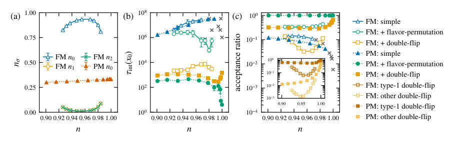
<figcaption class="paper-figure-caption"><b>Fig 1.</b> Fig. 2. (a) Flavor-resolved particle densities nσ for the FM and PM solutions as functions of the total particle density n. (b) Integrated autocorrelation time τint(x0) of the occupation x0 in the FM and PM solutions for the simple, simple + flavor-permutation, and simple + double-flip update schemes. (c) Acceptance ratios of the simple, flavor-permutation, and double-flip updates. Solid and dotted lines indicate the FM and PM solutions, respectively. The inset shows the acceptance ratios of the type-1 and other double-flip updates separately. Crosses indicate data points from simple-update runs that did not reach equilibrium and are shown only for reference. The results are obtained at T/D...</figcaption>
</figure>
<figure class="paper-figure-card">
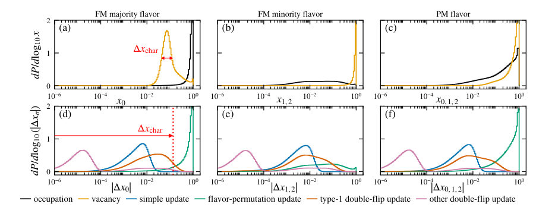
<figcaption class="paper-figure-caption"><b>Fig 2.</b> Fig. 3. Distributions of the occupation and vacancy for each flavor, and of occupation changes caused by accepted updates. (a)–(c) Probability densities dP/d log10 x sampled after each MCS for the FM majority flavor, FM minority flavor, and one flavor in the PM solution, respectively. Here, x = xσ for the occupation (black) and x = 1 −xσ for the vacancy (yellow). (d)–(f) Probability densities dP/d log10(|∆xσ|) of the magnitude of the occupation change of flavor σ caused by accepted simple (blue), flavor-permutation (green), type-1 double-flip (orange), and other double-flip (magenta) updates. The red arrow in (a) indicates the characteristic vacancy width ∆xchar, defined as the difference...</figcaption>
</figure>
</div>

<p><strong>Summary.</strong> This work analyzes the efficiency of various Monte Carlo update schemes for simulating the doped SU(3) Fermi-Hubbard model using DMFT and CT-HYB. By calculating the integrated autocorrelation time, the authors determine that the optimal update depends critically on the magnetic phase: double-flip updates are best for the ferromagnetic state, while flavor-permutation updates excel in the paramagnetic state. This highlights that understanding the physics of the accepted updates, rather than just acceptance ratios, is key to improving sampling algorithms.</p>
<p><strong>Why it may be interesting.</strong> While focused on condensed matter, the rigorous analysis of sampling efficiency and the development of specialized update algorithms (like double-flip) are highly relevant to developing robust numerical techniques for strongly correlated quantum systems, which share methodological overlap with quantum simulation approaches.</p>
<details>
<summary>Detailed structure</summary>
<p><strong>Main problem.</strong> The study investigates the sampling efficiency of various update schemes within a Quantum Monte Carlo solver applied to the doped SU(3) Fermi-Hubbard model.</p>
<p><strong>Main result.</strong> The double-flip update is most efficient in the ferromagnetic state, while the flavor-permutation update is superior in the paramagnetic state, demonstrating that the nature of the required configuration change dictates the optimal update scheme.</p>
<p><strong>Method.</strong> The authors compare different Monte Carlo update schemes by calculating the integrated autocorrelation time ($\tau_{int}$) of the majority-flavor occupation, relating it to the variance of the MC average.</p>
<p><strong>Model / system.</strong> The system is the doped SU(3) Fermi-Hubbard model on a hypercubic lattice. The problem is mapped onto an effective impurity problem solved using the Continuous-Time Hybridization-Expansion Quantum Monte Carlo (CT-HYB) method within Dynamical Mean-Field Theory (DMFT).</p>
<p><strong>Key observables.</strong> Integrated autocorrelation time ($\tau_{int}$) of the majority-flavor occupation, flavor-resolved particle densities ($n_\sigma$), and the magnitude of occupation changes ($\Delta x$).</p>
<p><strong>Important parameters / regimes.</strong> Low-temperature and strong-coupling regime; specific simulation parameters used were $T/D = 0.005$ and $U/D = 300$.</p>
<p><strong>Assumptions / limitations.</strong> The variance of the MC average is approximated as $\text{Var}(\langle X \rangle_{MC}) \simeq 2\tau_{int}(X) / N_{MCS}$.</p>
<p><strong>Figures summary.</strong> Figures illustrate the comparison of $\tau_{int}$ for different updates in FM and PM states, alongside probability distributions of occupation changes ($\Delta x$) caused by accepted updates.</p>
<p><strong>Paper structure.</strong> The paper introduces the model and the CT-HYB/DMFT framework, compares three update schemes (simple, simple+flavor-permutation, simple+double-flip) by analyzing $\tau_{int}$ in both FM and PM regimes, and concludes by analyzing the mechanism—the characteristic scale of configuration changes—that dictates efficiency.</p>
</details>
<details>
<summary>Abstract</summary>
<p>We investigate the sampling efficiency in a segment-based continuous-time hybridization-expansion quantum Monte Carlo solver within dynamical mean-field theory for the doped SU(3) Fermi-Hubbard model. Focusing on the low-temperature and strong-coupling regime, where a ferromagnetic state appears upon hole doping away from one-third filling, we compare several update schemes. Adding the double-flip update to the basic local update yields the smallest integrated autocorrelation time of the majority-flavor occupation in the ferromagnetic regime, whereas adding the flavor-permutation update is the most effective in the paramagnetic regime. We further clarify the origin of this difference by analyzing the characteristic occupation changes caused by accepted updates.</p>
</details>
<p><sub><a href="#top">↑ back to top</a></sub></p>

<p><a id="paper-2609.26769"></a></p>
<h3 id="on-the-complexity-of-finding-decoherence-free-subspaces"><a href="http://arxiv.org/abs/2609.26769v1">On the Complexity of Finding Decoherence Free Subspaces</a></h3>
<p><strong>Authors:</strong> Evan Borras<br>
<strong>Type:</strong> theory · <strong>Category:</strong> quantum information and computing · <strong>PDF:</strong> <a href="https://arxiv.org/pdf/2609.26769v1">https://arxiv.org/pdf/2609.26769v1</a><br>
<strong>Analysis basis:</strong> full PDF text, analyzed in chunks
<strong>Topic relevance:</strong> <code>correlated / nonlocal dissipation</code> <strong>1/5</strong> · <code>driven-dissipative phase transition</code> <strong>1/5</strong> · <code>methods for driven-dissipative</code> <strong>1/5</strong></p>
<div class="figure-strip-hint">↔ Scroll figures horizontally</div>
<div class="paper-figures-scroll">
<figure class="paper-figure-card">
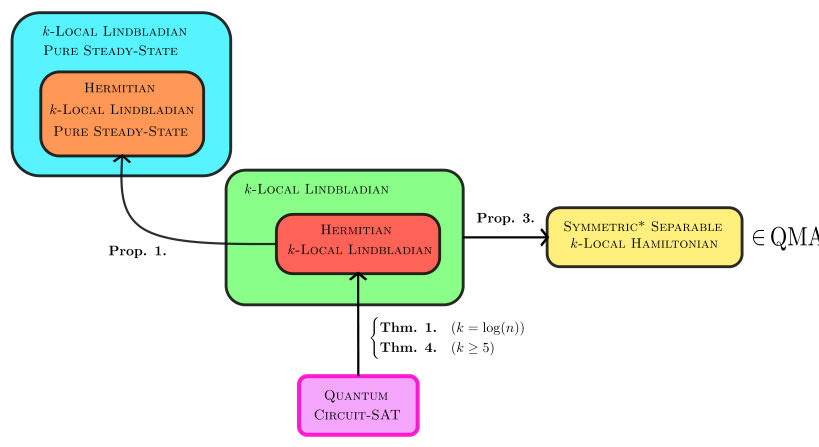
<figcaption class="paper-figure-caption"><b>Fig 1.</b> FIG. 1: Diagram of the problems we analyze and their inter-relations. Arrows denote reductions between problems where if we have A →B then A ≤B.</figcaption>
</figure>
<figure class="paper-figure-card">
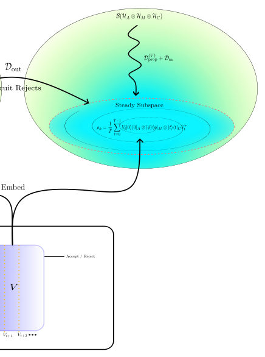
<figcaption class="paper-figure-caption"><b>Fig 2.</b> FIG. 2: A visualization of our Quantum Circuit-SAT disispator construction.</figcaption>
</figure>
<figure class="paper-figure-card">
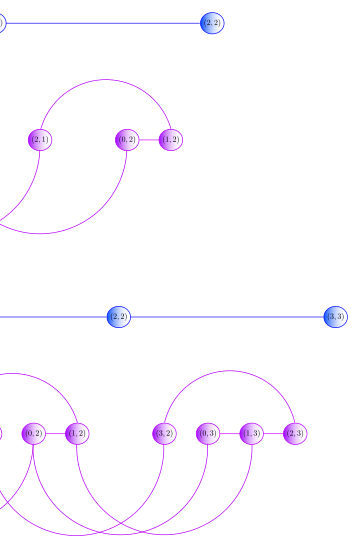
<figcaption class="paper-figure-caption"><b>Fig 3.</b> FIG. 1: Graphs associated with the rotated propagation dissipator for T = 3 and T = 4</figcaption>
</figure>
<figure class="paper-figure-card">
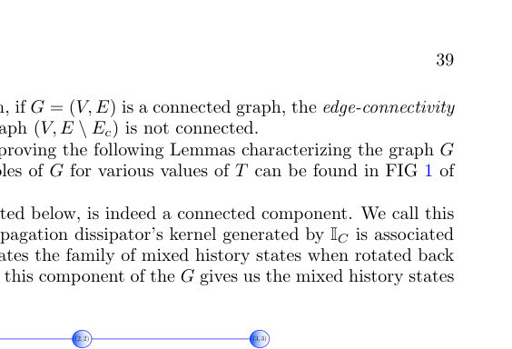
<figcaption class="paper-figure-caption"><b>Fig 4.</b> FIG. 2: Mixed component of the graph associated to the rotated propagation dissipator for T = 4</figcaption>
</figure>
<figure class="paper-figure-card">
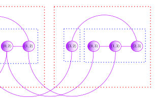
<figcaption class="paper-figure-caption"><b>Fig 5.</b> FIG. 3: Pure component of the graph associated to the rotated propagation dissipator for T = 4</figcaption>
</figure>
</div>

<p><strong>Summary.</strong> This work analyzes the computational difficulty of finding Decoherence Free Subspaces (DFS) in open quantum systems described by the Lindblad equation. By mapping the problem to specific complexity questions, the authors prove that determining the existence of a DFS is QMA-hard for sufficiently local interactions. This suggests that such a characterization is intractable even for quantum computers.</p>
<p><strong>Why it may be interesting.</strong> It establishes a fundamental computational barrier for characterizing coherence preservation in realistic, dissipative quantum systems, linking quantum information theory to quantum computation complexity.</p>
<details>
<summary>Detailed structure</summary>
<p><strong>Main problem.</strong> The paper studies the computational complexity of determining whether an open quantum system admits a Decoherence Free Subspace (DFS).</p>
<p><strong>Main result.</strong> Both the $k$-Local Lindbladian Pure Steady-State problem and the $k$-Local Lindbladian problem are shown to be hard for the complexity class QMA when the locality $k \geq 5$.</p>
<p><strong>Method.</strong> The authors use complexity theory techniques, generalizing Kitaev's clock Hamiltonian construction to the open quantum system setting to establish QMA-hardness.</p>
<p><strong>Model / system.</strong> The system is an open quantum system governed by the time-independent Lindblad master equation. The analysis focuses on the steady-state structure (DFS) preserved under this dissipation.</p>
<p><strong>Key observables.</strong> The existence of a steady-state subspace (DFS) and the decay rates of purity for history states.</p>
<p><strong>Important parameters / regimes.</strong> Locality parameter $k$, and the threshold for QMA-completeness ($k \geq 5$).</p>
<p><strong>Assumptions / limitations.</strong> The hardness results suggest intractability even for quantum computation, relying on the assumption that BQP $
eq$ QMA.</p>
<p><strong>Paper structure.</strong> The paper defines the problem, introduces the $k$-Local Lindbladian problems, and then proves the QMA-hardness of both problems using specialized constructions.</p>
</details>
<details>
<summary>Abstract</summary>
<p>Decoherence free subspaces are a steady-state structure of the open quantum system which preserves quantum coherence between the states lying with in it and thus has found a variety of applications throughout quantum information science and technology. In this paper we study the computational complexity of deciding whether an open quantum system admits a decoherence free subspace or not. More specifically we study this problem with in the context of Markovian open quantum systems, governed by the time-independent Lindblad master equation. Along the way we introduce the $k$-Local Lindbladian problem, which captures the difficulty of computing purity decay rates under Lindbladian dynamics. We show that both problems are hard for the complexity class Quantum Merlin Arthur (QMA) when the locality $k \geq 5$, with the first under perfect completeness and the second being complete for QMA. Our hardness construction generalizes Kitaev's clock Hamiltonian construction to the open quantum system setting by encoding the execution of a quantum circuit into the steady subspace of a Lindbladian containing both pure and mixed history states. This subspace is then mixed depending on the output of the encoded circuit. Our results suggest that deciding whether a generic Markovian open quantum system admits a decoherence free subspace is intractable even for quantum computation.</p>
</details>
<p><sub><a href="#top">↑ back to top</a></sub></p>

<p><a id="paper-2609.26373"></a></p>
<h3 id="effect-of-interaction-range-on-the-phase-diagram-of-magnetic-hedgehog-lattices"><a href="http://arxiv.org/abs/2609.26373v1">Effect of interaction range on the phase diagram of magnetic hedgehog lattices</a></h3>
<p><strong>Authors:</strong> Midori Yamada, Kotaro Shimizu, Shun Okumura, Yasuyuki Kato, Yukitoshi Motome<br>
<strong>Type:</strong> theory · <strong>Category:</strong> strongly correlated electrons · <strong>PDF:</strong> <a href="https://arxiv.org/pdf/2609.26373v1">https://arxiv.org/pdf/2609.26373v1</a><br>
<strong>Analysis basis:</strong> full PDF text, analyzed in chunks
<strong>Topic relevance:</strong> <code>analog quantum simulation</code> <strong>1/5</strong> · <code>methods for driven-dissipative</code> <strong>1/5</strong></p>
<div class="figure-strip-hint">↔ Scroll figures horizontally</div>
<div class="paper-figures-scroll">
<figure class="paper-figure-card">
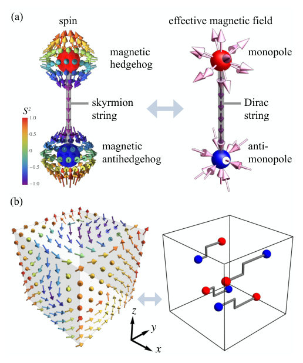
<figcaption class="paper-figure-caption"><b>Fig 1.</b> FIG. 1. (a) Schematic illustrations of a magnetic toron in real space, consisting of a magnetic hedgehog (red sphere) and a magnetic anti- hedgehog (blue sphere) connected by a skyrmion string (gray tube) (left). The arrows represent the spins, and their color indicates the z component. The right panel represents the corresponding ef- fective magnetic field, showing that a toron can be regarded as a monopole–antimonopole pair (red and blue spheres) connected by a Dirac string (gray tube). (b) Real-space spin configuration of a 3D topological spin structure known as a HL (left), and the correspond- ing real-space distribution of magnetic torons within a magnetic unit cell (right).</figcaption>
</figure>
<figure class="paper-figure-card">
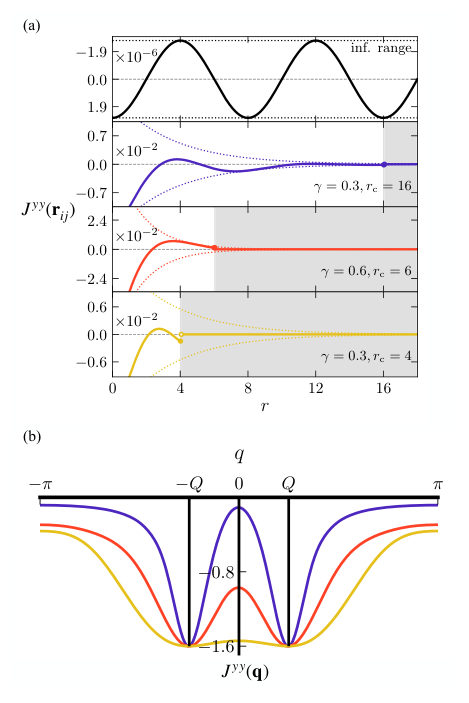
<figcaption class="paper-figure-caption"><b>Fig 2.</b> FIG. 2. Exchange interaction Jyy in (a) real space along the x axis with rij = (x, 0, 0) and (b) momentum space along the qx axis with q = (q, 0, 0), for different decay strengths and cutoff lengths: infinite interaction range (black), γ = 0.3 and rc = 16 (blue), γ = 0.6 and rc = 6 (red), and γ = 0.3 and rc = 4 (yellow). The gray region in (a) marks distances beyond the cutoff length, above which the inter- actions are set to zero.</figcaption>
</figure>
<figure class="paper-figure-card">
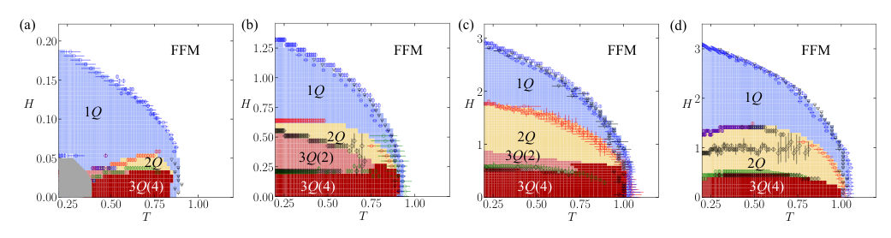
<figcaption class="paper-figure-caption"><b>Fig 3.</b> FIG. 3. H-T Phase diagrams for the models with (a) short-range (γ = 0.3 and rc = 4), intermediate-range (b) (γ = 0.6 and rc = 6), and (c) (γ = 0.3 and rc = 16), and (d) infinite-range interactions. The labels 1Q and 2Q denote the 1Q spiral phase and the topologically trivial 2Q phase, respectively; 3Q(4) and 3Q(2) denote the 3Q-HL phases, where the numbers in parentheses represent the toron number per magnetic unit cell, and FFM denotes the forced FM phase. In the gray region of panel (a), the phase could not be reliably identified because the MC sampling exhibited pronounced finite-size effects. The phase boundaries are estimated from the peaks in the magnetic susceptibility (diamonds) and...</figcaption>
</figure>
<figure class="paper-figure-card">

<figcaption class="paper-figure-caption"><b>Fig 4.</b> FIG. 4. (a) H dependences at T = 0.2 of (top) the magnetic moments mη at the ordering wave vectors Q1, Q2, and Q3, indicated by red, green, and blue markers, respectively; (middle) the magnetic suscep- tibility χm and net magnetization per spin m; and (bottom) the toron number Nt and scalar spin chirality χs for the intermediate-range in- teraction model with γ = 0.6 and rc = 6. (b) T dependences at H = 0 of mη and the specific heat C for the same model. Filled markers with pale colors and open markers with dark colors represent the results obtained for the system sizes N = 83 and 163, respectively.</figcaption>
</figure>
<figure class="paper-figure-card">
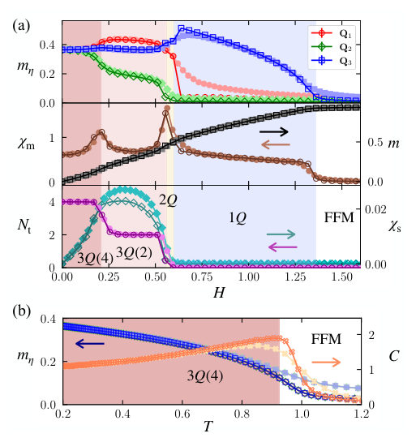
<figcaption class="paper-figure-caption"><b>Fig 5.</b> Figure 3(c) shows the phase diagram for a longer but still finite interaction range. The set of stabilized phases and the overall sequence of phase transitions are qualitatively simi- lar to those in Fig. 3(b). The principal difference lies in the</figcaption>
</figure>
</div>

<p><strong>Summary.</strong> This paper theoretically investigates the role of interaction range in stabilizing magnetic hedgehog lattices, which are key topological spin textures. Using Monte Carlo simulations, the authors show that intermediate-range interactions are optimal for stabilizing these structures. The work establishes a unified framework for tuning magnetic phase diagrams based on microscopic interaction models.</p>
<p><strong>Why it may be interesting.</strong> The systematic tuning of phase diagrams by controlling the interaction range provides a general guideline for understanding complex magnetic ordering in correlated materials.</p>
<details>
<summary>Detailed structure</summary>
<p><strong>Main problem.</strong> The study investigates how the range of exchange interactions influences the stability and phase diagram of magnetic hedgehog lattices (HLs).</p>
<p><strong>Main result.</strong> HLs are stabilized over a broad interaction range, with intermediate-range interactions being particularly favorable, leading to two distinct types of 3Q-HLs.</p>
<p><strong>Method.</strong> The research employs extensive Monte Carlo simulations to systematically vary the range and spatial decay of the exchange interactions.</p>
<p><strong>Model / system.</strong> The system models magnetic hedgehog lattices, which are 3D topological spin textures hosting magnetic monopoles, studied using an effective bilinear spin model for cubic chiral magnets.</p>
<p><strong>Key observables.</strong> Stability of HLs, number of monopole-antimonopole pairs per unit cell, magnetic moments ($m_\eta$), and scalar spin chirality ($\chi_s$).</p>
<p><strong>Important parameters / regimes.</strong> Interaction range (short, intermediate, long), characterized by parameters like $\gamma$ and $r_c$.</p>
<p><strong>Assumptions / limitations.</strong> Localized moments are treated as classical unit vectors, and the model is derived from the metallic limit using a weak-coupling expansion.</p>
<p><strong>Figures summary.</strong> Figures illustrate schematic representations of magnetic torons and real-space spin configurations of HLs, and show phase diagram dependencies on magnetic field and temperature for specific interaction ranges.</p>
<p><strong>Paper structure.</strong> The paper establishes a theoretical framework by modeling the Hamiltonian, then uses MC simulations to map out phase diagrams by interpolating between short-range (insulating) and long-range (metallic) interaction profiles.</p>
</details>
<details>
<summary>Abstract</summary>
<p>Topological spin textures have attracted considerable attention through their emergent electromagnetic properties, including the topological Hall effect and the topological Nernst effect. Among them, magnetic hedgehog lattices (HLs) are three-dimensional topological spin textures that host emergent magnetic monopoles and antimonopoles. HLs have been identified in metallic compounds, such as $\mathrm{MnSi}_{1-x}\mathrm{Ge}_x$ and $\mathrm{SrFeO_3}$. Various theoretical models have been proposed, with either short-range or long-range interactions, which are typically regarded as effective descriptions of insulating and metallic systems, respectively. However, the role of the interaction range in stabilizing the HLs remains only partially understood. To address this gap, we investigate the stability of HLs by systematically varying the range and spatial decay of the exchange interactions, thereby interpolating between interaction profiles commonly associated with localized-spin insulating models and itinerant-electron metallic models. Based on extensive Monte Carlo simulations, we find that HLs are stabilized over a broad interaction range. Intriguingly, among the interaction profiles examined, intermediate-range interactions are particularly favorable for stabilizing HLs. They give rise to two distinct types of $3Q$-HLs that differ in the number of monopole-antimonopole pairs per magnetic unit cell, and their relative stability depends sensitively on the interaction range. Our results provide a unified framework for tuning phase diagrams from microscopic interaction models, serving as a guideline for interpreting experiments in candidate materials.</p>
</details>
<p><sub><a href="#top">↑ back to top</a></sub></p>

<p><a id="paper-2609.26330"></a></p>
<h3 id="effective-hamiltonian-quantum-solvers-for-differential-equations-alternative-constructions-and-function-encodings"><a href="http://arxiv.org/abs/2609.26330v1">Effective-Hamiltonian Quantum Solvers for Differential Equations: Alternative Constructions and Function Encodings</a></h3>
<p><strong>Authors:</strong> Annie E. Paine<br>
<strong>Type:</strong> theory · <strong>Category:</strong> quantum information and computing · <strong>PDF:</strong> <a href="https://arxiv.org/pdf/2609.26330v1">https://arxiv.org/pdf/2609.26330v1</a><br>
<strong>Analysis basis:</strong> full PDF text, analyzed in chunks
<strong>Topic relevance:</strong> <code>Keldysh / 2PI / non-Gaussian methods</code> <strong>1/5</strong> · <code>analog quantum simulation</code> <strong>1/5</strong></p>
<div class="figure-strip-hint">↔ Scroll figures horizontally</div>
<div class="paper-figures-scroll">
<figure class="paper-figure-card">
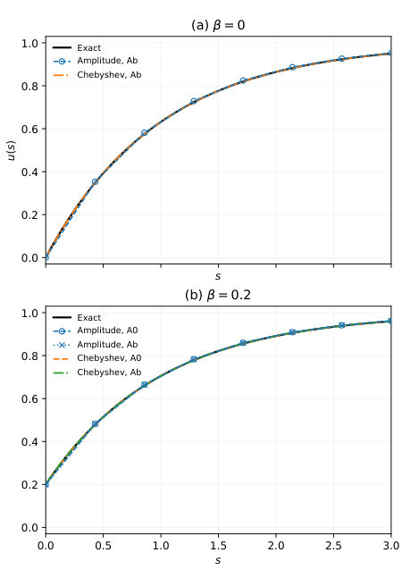
<figcaption class="paper-figure-caption"><b>Fig 1.</b> Figure 1: Comparison of the results of solving the RC Charging problem Eq. (27) to the analytical solution (solid line) using Chebyshev (dashed lines) and am- plitude encodings (markers) over N = 3. (a) Results for β = 0, for which only the Ab construction is ap- plicable. (b) Results for β = 0.2, using both the A0 and Ab constructions.</figcaption>
</figure>
<figure class="paper-figure-card">
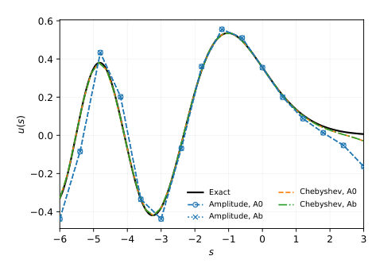
<figcaption class="paper-figure-caption"><b>Fig 2.</b> Figure 2: Comparison of the results of solving the Airy equation Eq. (31) to the analytical solution (solid line) using Chebyshev (dashed lines) and am- plitude encodings (markers) over N = 4 with A0 and Ab type Hamiltonians.</figcaption>
</figure>
<figure class="paper-figure-card">
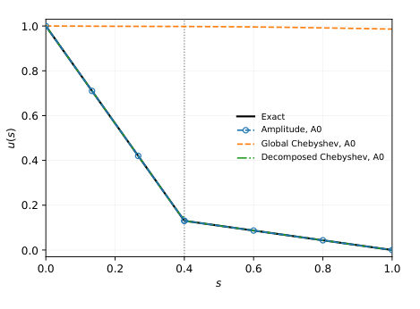
<figcaption class="paper-figure-caption"><b>Fig 3.</b> Figure 3: Comparison of the results of solving the Composite Wall DE Eq. (47) to the analytical so- lution (solid line) using Chebyshev and decomposed Chebyshev encodings (dashed lines) and amplitude encodings (markers) over N = 3 and A0 type Hamil- tonian.</figcaption>
</figure>
<figure class="paper-figure-card">
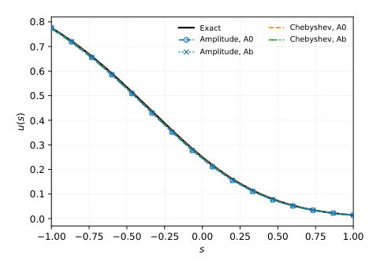
<figcaption class="paper-figure-caption"><b>Fig 4.</b> Figure 4: Comparison of the results of solving the Fisher-KPP travelling front Eq. (60) to the analytical solution (solid line) using Chebyshev (dashed lines) with N = 3 and amplitude encodings (markers) with N = 4. Both A0 and Ab type Hamiltonians are con- sidered.</figcaption>
</figure>
</div>

<p><strong>Summary.</strong> This paper details advanced methods for using quantum computation to solve differential equations by mapping them onto finding the ground state of an engineered effective Hamiltonian. It significantly extends the original framework by incorporating non-zero boundary conditions and comparing various function encoding techniques. The results demonstrate the feasibility of applying this powerful quantum tool to complex physical models like reaction-diffusion systems.</p>
<p><strong>Why it may be interesting.</strong> This work provides a comprehensive survey and extension of a quantum simulation technique, directly addressing the practical limitations (like non-zero boundary conditions and nonlinearity) that have historically restricted the applicability of quantum solvers for continuous physical systems.</p>
<details>
<summary>Detailed structure</summary>
<p><strong>Main problem.</strong> Developing quantum algorithms to solve differential equations (DEs) by encoding them as ground-state finding problems using effective Hamiltonians.</p>
<p><strong>Main result.</strong> The authors successfully extended the framework to incorporate multiple non-zero boundary/initial conditions and compared different function encoding schemes (amplitude vs. spectral) for solving complex DEs.</p>
<p><strong>Method.</strong> The core method involves constructing a positive-semidefinite effective Hamiltonian, $H_{	ext{eff}}$, such that the minimum energy state $|\psi
angle$ yields the solution to the DE. Nonlinearities are handled by lifting the state space or using variational ansätze.</p>
<p><strong>Model / system.</strong> The framework is applied to various DEs, including those describing heat conduction in composite materials and the Fisher-KPP reaction-diffusion equation. The quantum computation is performed on an abstract system represented by the Hamiltonian.</p>
<p><strong>Key observables.</strong> Solution recovery, spectral gap, degeneracy, and the ability to accurately reproduce known analytical solutions for test cases.</p>
<p><strong>Important parameters / regimes.</strong> The choice of Hamiltonian formulation ($A_0$ vs. $A_b$), the encoding method (amplitude vs. Chebyshev), and the degree of nonlinearity ($\lambda$).</p>
<p><strong>Assumptions / limitations.</strong> The primary assumption is that the ground state uniquely identifies the desired solution, and for nonlinear cases, the use of restricted variational ansätze is necessary to manage inherent ground-state degeneracy.</p>
<p><strong>Figures summary.</strong> Figure 4 compares solutions for the Fisher-KPP equation using Chebyshev and amplitude encodings for different Hamiltonian types, demonstrating the reconstruction of the target solution.</p>
<p><strong>Paper structure.</strong> The paper systematically extends the standard null-space formulation ($A|\psi
angle=0$) to handle non-zero constraints ($A|\psi
angle=|b
angle$), then compares amplitude encoding against spectral encoding, and finally addresses the challenges posed by nonlinear terms using variational methods.</p>
</details>
<details>
<summary>Abstract</summary>
<p>Differential equations can be encoded as ground-state problems by constructing a positive-semidefinite effective Hamiltonian whose minimum-energy state represents the solution. We extend this framework in several directions. First, we show how multiple nonzero initial, boundary, and data conditions can be incorporated into the homogeneous formulation $A | f\rangle=0$ using a known nonzero reference condition. We then analyse an alternative formulation based on $A |f\rangle = | b\rangle$, with Hamiltonian $H_b=A^\dagger(I-|b\rangle\langle b|)A$, which incorporates source terms and nonzero constraints through an augmented system. For nonlinear differential equations, we examine the unphysical ground-state degeneracy introduced by tensor-product representations and consider both Hamiltonian constraints and ansatz-level restrictions for targeting physically valid product states. Finally, we develop grid-value amplitude-encoded versions of both Hamiltonian constructions and compare them with spectral coefficient encoding. Through linear and nonlinear examples, we assess how the choice of Hamiltonian formulation and function representation affects solution recovery, spectral gap, degeneracy, and readout. These results broaden the applicability of ground-state-based quantum differential-equation solvers while clarifying their principal practical trade-offs.</p>
</details>
<p><sub><a href="#top">↑ back to top</a></sub></p>

<p><a id="paper-2609.26743"></a></p>
<h3 id="explicit-channels-with-unbounded-gains-in-classical-communication-using-entangled-inputs"><a href="http://arxiv.org/abs/2609.26743v1">Explicit channels with unbounded gains in classical communication using entangled inputs</a></h3>
<p><strong>Authors:</strong> Hao-Chung Cheng, Peixue Wu<br>
<strong>Type:</strong> theory · <strong>Category:</strong> quantum information and computing · <strong>PDF:</strong> <a href="https://arxiv.org/pdf/2609.26743v1">https://arxiv.org/pdf/2609.26743v1</a><br>
<strong>Analysis basis:</strong> full PDF text, analyzed in chunks
<strong>Topic relevance:</strong> <code>quantum measurements</code> <strong>1/5</strong></p>
<div class="figure-strip-hint">↔ Scroll figures horizontally</div>
<div class="paper-figures-scroll">
<figure class="paper-figure-card">
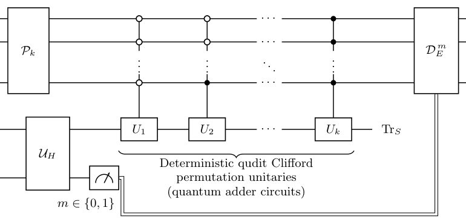
<figcaption class="paper-figure-caption"><b>Fig 1.</b> FIG. 1. Circuit implementations of the channels. (a) Complementary uniform mixed-unitary model with i.i.d. Haar-random UI. (b) Measurement and feedforwarding channels, with UI given by qudit Clifford permutation unitaries implemented through quantum adders and a carefully designed measurement operator H. Measurement outcome m = 0 indicates no dephasing and m = 1 indicates complete dephasing.</figcaption>
</figure>
</div>

<p><strong>Summary.</strong> This paper constructs explicit quantum channels that violate the additivity of the Holevo information, demonstrating that using entangled inputs can boost the achievable classical communication rate significantly. By combining deterministic qudit unitaries with measurement and feedforward, the authors provide a concrete realization of superadditivity in quantum information theory.</p>
<p><strong>Why it may be interesting.</strong> The explicit construction of channels violating additivity provides a concrete, implementable (in principle) example of quantum resource theory limitations, which is fundamental to understanding quantum communication protocols.</p>
<details>
<summary>Detailed structure</summary>
<p><strong>Main problem.</strong> The paper investigates whether entangling the inputs to independent uses of a quantum channel can increase the rate of classical communication beyond the one-shot Holevo information, addressing the additivity problem for quantum channels.</p>
<p><strong>Main result.</strong> The authors construct an explicit family of quantum channels demonstrating superadditivity, showing that the classical capacity can be significantly larger than the one-shot Holevo information.</p>
<p><strong>Method.</strong> The analysis uses explicit constructions involving deterministic qudit Clifford unitaries, binary measurements, and classical feedforward (MFF) processes to derive rigorous lower and upper bounds on output entropies.</p>
<p><strong>Model / system.</strong> The model is a finite-dimensional quantum channel $\Phi_N: \mathcal{M}_N 	o \mathcal{M}_k$. The construction leverages quantum adders and Clifford unitaries to engineer the required input/output entropy relationships.</p>
<p><strong>Key observables.</strong> One-shot Holevo information ($\chi_{\max}(\Phi)$), classical capacity ($C(\Phi)$), and minimum output entropy ($H_{\min}$).</p>
<p><strong>Important parameters / regimes.</strong> The dimension $N$ of the input space, the output dimension $k$, and the parameter $r$ controlling the gap growth.</p>
<p><strong>Assumptions / limitations.</strong> The construction relies on specific algebraic bounds derived from Lemma 1 and Lemma 2, and the proof is presented as a 'proof of principle' due to the complexity of the required unitaries.</p>
<p><strong>Figures summary.</strong> Figure 1 illustrates the circuit implementations, comparing the Haar-random model with the deterministic MFF implementation using qudit Clifford permutation unitaries. Table I compares the new explicit construction method against previous techniques.</p>
<p><strong>Paper structure.</strong> The paper progresses by first establishing the theoretical framework for superadditivity violation, then deriving specific entropy bounds using lemmas, and finally constructing the explicit channel $\Phi_N$ that realizes the desired gap between one-shot and two-copy communication rates.</p>
</details>
<details>
<summary>Abstract</summary>
<p>We construct an explicit family of finite-dimensional quantum channels for which the optimal classical communication rate achievable with product-state codewords and collective decoding tends to zero, while rates achievable using entanglement only within pairs of channel inputs grow without bound.   Our construction combines deterministic qudit Clifford unitaries with a binary measurement and classical feedforward, providing a derandomization to Hastings' probabilistic construction. The key ingredient is a careful design of measurement and feedforward process that yields the required one-copy and two-copy output entropy bounds from moment estimates alone, without requiring strong convergence of the underlying unitary family.</p>
</details>
<p><sub><a href="#top">↑ back to top</a></sub></p>

<p><a id="paper-2609.25816"></a></p>
<h3 id="exponential-quantum-advantage-in-testing-fourier-dimensionality"><a href="http://arxiv.org/abs/2609.25816v1">Exponential Quantum Advantage in Testing Fourier Dimensionality</a></h3>
<p><strong>Authors:</strong> Kenny Chen<br>
<strong>Type:</strong> theory · <strong>Category:</strong> quantum information and computing · <strong>PDF:</strong> <a href="https://arxiv.org/pdf/2609.25816v1">https://arxiv.org/pdf/2609.25816v1</a><br>
<strong>Analysis basis:</strong> abstract only; PDF text extraction failed or PDF unavailable
<strong>Topic relevance:</strong> <code>quantum measurements</code> <strong>1/5</strong></p>
<p><strong>Summary.</strong> This paper analyzes the property testing problem for determining the Fourier dimension of a boolean function. The authors prove the existence of a highly efficient quantum tester, achieving an exponential speedup compared to the best known classical methods. This work establishes the fundamental quantum advantage for this specific computational task.</p>
<p><strong>Why it may be interesting.</strong> While abstract, the demonstration of exponential quantum advantage in a computational task like property testing is a fundamental result in quantum information theory, relevant to understanding the limits of quantum computation.</p>
<details>
<summary>Detailed structure</summary>
<p><strong>Main problem.</strong> The paper addresses the property testing task of determining if a boolean function has a Fourier dimension at most $k$, or if it is $\epsilon$-far from having this property.</p>
<p><strong>Main result.</strong> The authors demonstrate a quantum property tester with a complexity of $\Theta(k)$, achieving an exponential quantum advantage over the classical lower bound of $\Omega(2^{k/2})$.</p>
<p><strong>Method.</strong> The work involves establishing bounds for property testing using quantum information theory, specifically comparing quantum and classical query complexities.</p>
<p><strong>Model / system.</strong> The focus is on a general boolean function $f$ and its associated Fourier coefficients, rather than a specific physical Hamiltonian or system.</p>
<p><strong>Key observables.</strong> Fourier dimension $k$ of the function $f$, and the required query complexity for property testing.</p>
<p><strong>Important parameters / regimes.</strong> The error tolerance $\epsilon$ and the dimension $k$ of the Fourier subspace.</p>
<p><strong>Assumptions / limitations.</strong> The analysis relies on the definition of Fourier dimension and the established classical lower bound by Gopalan et al.</p>
<p><strong>Paper structure.</strong> The paper likely proceeds by defining the problem, stating the classical lower bound, presenting the quantum algorithm/tester, and finally showing the tightness of the bound by improving the classical upper bound.</p>
</details>
<details>
<summary>Abstract</summary>
<p>A boolean function $f$ has Fourier dimension $k$ if its nonzero Fourier coefficients span a subspace of dimension $k$. We consider the property testing task of determining whether a function has Fourier dimension at most $k$, or is $ε$-far from being so. We show that there is a $Θ(k)$ quantum property tester for this problem. With Gopalan \etal's classical lower bound of $Ω(2^{k/2})$ for this task, this demonstrates an exponential quantum advantage for this task. We complement this result with a $\tilde{O}(2^{k/2}/ε)$ classical tester, improving the best known upper bound and thus showing the prior lower bound is essentially tight.</p>
</details>
<p><sub><a href="#top">↑ back to top</a></sub></p>

<p><a id="paper-2609.26448"></a></p>
<h3 id="i-prove-therefore-i-am-spatiotemporal-multi-party-computation"><a href="http://arxiv.org/abs/2609.26448v1">I Prove, Therefore I Am: Spatiotemporal Multi-Party Computation</a></h3>
<p><strong>Authors:</strong> Ziqing Guo, Fuyuki Kitagawa, Xiao Liang<br>
<strong>Type:</strong> theory · <strong>Category:</strong> other · <strong>PDF:</strong> <a href="https://arxiv.org/pdf/2609.26448v1">https://arxiv.org/pdf/2609.26448v1</a><br>
<strong>Analysis basis:</strong> full PDF text, analyzed in chunks
<strong>Topic relevance:</strong> <code>quantum measurements</code> <strong>1/5</strong></p>
<div class="figure-strip-hint">↔ Scroll figures horizontally</div>
<div class="paper-figures-scroll">
<figure class="paper-figure-card">
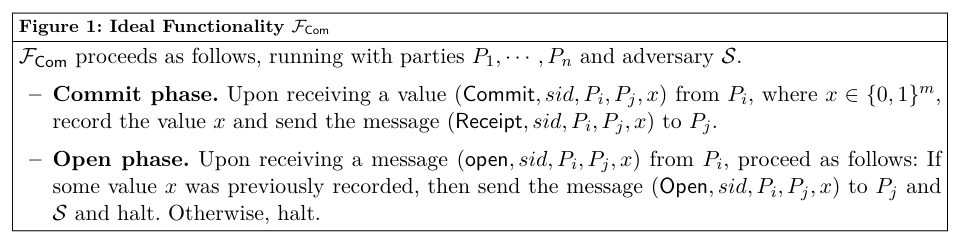
<figcaption class="paper-figure-caption"><b>Fig 1.</b> Figure 2: Ideal Functionality FZK FZK proceeds as follows, running with parties P1, · · · , Pn and adversary S. The functionality is parameterized by a binary relation R.</figcaption>
</figure>
</div>

<p><strong>Summary.</strong> This paper develops Spatiotemporal Multi-Party Computation (MPC), a cryptographic extension that ensures computations use inputs consistent with the parties' actual physical locations and times. It achieves this by defining 'spatiotemporal knowledge' operationally through verification protocols, leading to new UC-secure constructions for privacy-preserving computations in physical settings.</p>
<p><strong>Why it may be interesting.</strong> While highly cryptographic, the focus on binding computation to physical reality (location/time) has implications for quantum networking and distributed quantum sensing where physical state verification is paramount.</p>
<details>
<summary>Detailed structure</summary>
<p><strong>Main problem.</strong> The paper extends Secure Multiparty Computation (MPC) to Spatiotemporal MPC, requiring protocols to not only hide private digital inputs but also guarantee that the computation's inputs are physically consistent with the parties' actual locations and times.</p>
<p><strong>Main result.</strong> The authors define a new notion of 'argument of spatiotemporal knowledge' and provide constructions for Universally Composable (UC) secure spatiotemporal MPC, applicable in both quantum and classical settings.</p>
<p><strong>Method.</strong> The core methodology involves defining physical presence operationally through the success of an auxiliary spatiotemporal verification protocol, rather than through a direct mathematical relation.</p>
<p><strong>Model / system.</strong> The model is a cryptographic framework applied to multi-party computation involving inputs that are a combination of private digital data and physical spatiotemporal coordinates (location, time, trajectory).</p>
<p><strong>Key observables.</strong> Physical consistency of inputs, privacy of digital and spatiotemporal data, and composability of the computation.</p>
<p><strong>Important parameters / regimes.</strong> Quantum security models (e.g., LWE, QROM), entanglement availability, and the required level of spatiotemporal precision.</p>
<p><strong>Assumptions / limitations.</strong> The security relies on the existence of efficient two-stage extractors and the soundness of auxiliary spatiotemporal verification protocols.</p>
<p><strong>Paper structure.</strong> The paper introduces the problem gap between standard MPC and physical constraints, defines the 'argument of spatiotemporal knowledge' based on operational verification, and then proceeds to construct the necessary UC-secure protocols.</p>
</details>
<details>
<summary>Abstract</summary>
<p>Secure multiparty computation (MPC) enables mutually distrustful parties to compute on private digital inputs. We initiate the study of spatiotemporal MPC, extending this paradigm to functionalities whose inputs additionally depend on physical facts such as the parties' locations, times, or trajectories. Such protocols must simultaneously hide spatiotemporal information and ensure its physical consistency: a malicious party should not be able to make the functionality operate on a spatiotemporal input inconsistent with its actual physical state.   The main conceptual challenge is to formulate extraction of spatiotemporal information within the simulation-based security framework. We introduce arguments of spatiotemporal knowledge, following the principle "I prove, therefore I am:" rather than defining physical presence directly through a mathematical relation, we define it operationally through the ability to complete a sound spatiotemporal verification protocol. Accordingly, an extractor recovers a spatiotemporal point from a successful prover and certifies its physical validity by using the extracted prover to succeed in an auxiliary spatiotemporal verification protocol. Building on this notion, we define universally composable (UC) security for spatiotemporal MPC, capturing privacy, physical consistency, and composability.   We provide constructions achieving this new MPC notion. We first construct UC-secure commit-and-prove of spatiotemporal knowledge: in the CRS model under LWE against quantum provers without pre-shared entanglement, and in the QROM against quantum provers with unbounded pre-shared entanglement. Using these protocols, we obtain UC-secure spatiotemporal MPC from semi-honest post-quantum MPC. We also extend our framework to support quantum functionalities with classical spatiotemporal input.</p>
</details>
<p><sub><a href="#top">↑ back to top</a></sub></p>

<p><a id="paper-2609.25214"></a></p>
<h3 id="nonlocal-advantage-of-quantum-coherence-in-tau-lepton-pairs-from-electron-positron-collisions"><a href="http://arxiv.org/abs/2609.25214v1">Nonlocal advantage of quantum coherence in tau-lepton pairs from electron--positron collisions</a></h3>
<p><strong>Authors:</strong> Yoav Afik, Juan Ramón Muñoz de Nova, Sarthak Sharma, Surya Sundar Raman<br>
<strong>Type:</strong> theory · <strong>Category:</strong> other · <strong>PDF:</strong> <a href="https://arxiv.org/pdf/2609.25214v1">https://arxiv.org/pdf/2609.25214v1</a><br>
<strong>Analysis basis:</strong> full PDF text, analyzed in chunks
<strong>Topic relevance:</strong> <code>quantum measurements</code> <strong>1/5</strong></p>
<div class="figure-strip-hint">↔ Scroll figures horizontally</div>
<div class="paper-figures-scroll">
<figure class="paper-figure-card">
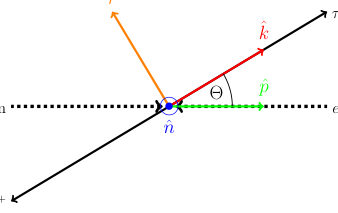
<figcaption class="paper-figure-caption"><b>Fig 1.</b> FIG. 1. Schematic description of the helicity basis.</figcaption>
</figure>
<figure class="paper-figure-card">
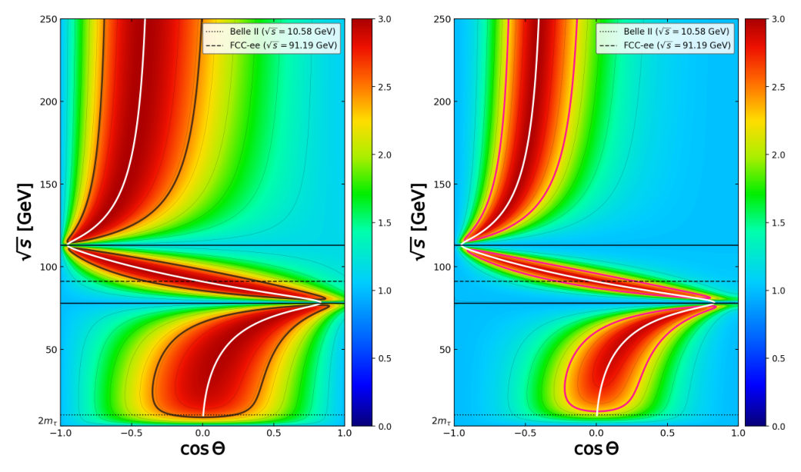
<figcaption class="paper-figure-caption"><b>Fig 2.</b> FIG. 2. Cl1 NA (left) and Cre NA (right) in the diagonal basis for e+e−→τ +τ −production over the (cos Θ, √s) plane. The brown and magenta contours delimitate the NAQC boundaries, Cl1 NA = ¯Cl1 max = √</figcaption>
</figure>
<figure class="paper-figure-card">
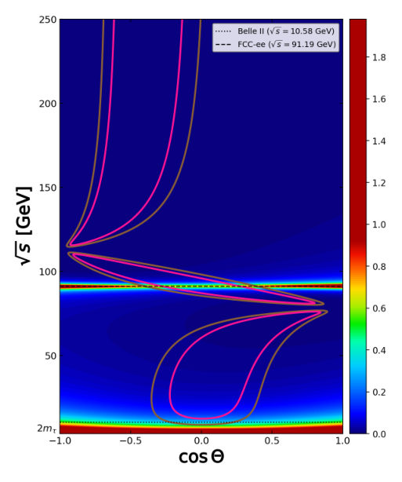
<figcaption class="paper-figure-caption"><b>Fig 3.</b> FIG. 3. Differential cross section in nb for e+e−→τ +τ −</figcaption>
</figure>
<figure class="paper-figure-card">
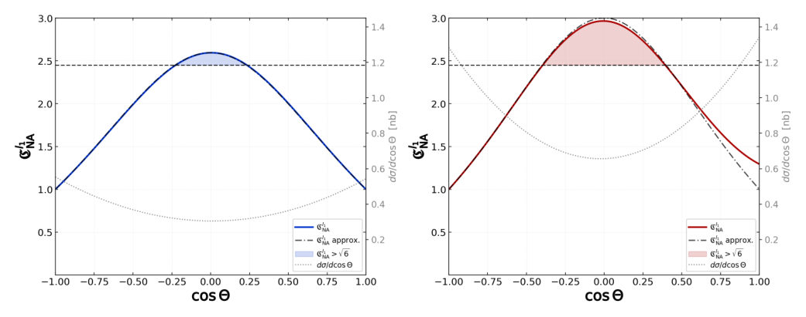
<figcaption class="paper-figure-caption"><b>Fig 4.</b> FIG. 4. Cl1 NA (solid line) in the diagonal basis as a function of cos Θ at √s = 10.58 GeV (Belle II, left) and √s = 91.19 GeV (FCC-ee, right). The black dashed-dotted line represents the value of Cl1 NA obtained from the approximations in Eqs. (47), (55). The horizontal dashed line is the NAQC boundary Cl1 NA = √</figcaption>
</figure>
<figure class="paper-figure-card">
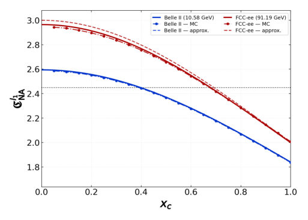
<figcaption class="paper-figure-caption"><b>Fig 5.</b> FIG. 5. NAQC measure of the angular averaged quantum state ρΣ over the selection window | cos Θ| &lt; xc, Cl1 NA(√s, xc), for Belle II (blue) and FCC-ee (red). Solid lines show the exact analytical calculation, dashed-dotted lines the results from the MC simulation, and dashed lines the corresponding approximations from Eqs. (47), (55). The horizontal dotted line indicates the NAQC boundary (69).</figcaption>
</figure>
</div>

<p><strong>Summary.</strong> This paper analyzes the Nonlocal Advantage of Quantum Coherence (NAQC) in $    au$-lepton pair production from $e^+e^-$ collisions. The authors derive a specific, measurable witness for NAQC and calculate the experimental precision needed at future colliders like FCC-ee to observe this correlation. This work represents a significant theoretical step in testing the strongest known quantum correlations in particle physics.</p>
<p><strong>Why it may be interesting.</strong> While focused on high-energy physics, the rigorous development of a measurable quantum correlation witness (NAQC) and the implementation of a 'steering game' concept in a high-energy collider setting provide advanced theoretical tools applicable to characterizing quantum correlations in complex, multi-particle systems.</p>
<details>
<summary>Detailed structure</summary>
<p><strong>Main problem.</strong> The paper investigates the Nonlocal Advantage of Quantum Coherence (NAQC), a strong form of quantum correlation, in particle collider physics.</p>
<p><strong>Main result.</strong> The authors develop a dedicated NAQC witness and estimate the experimental precision required at Belle II and FCC-ee to observe this correlation, which would be the strongest measured in a collider to date.</p>
<p><strong>Method.</strong> The methodology involves deriving spin density matrices for $   au^+    au^-$ production and applying theoretical measures of coherence, such as the NAQC witness derived from a steering game.</p>
<p><strong>Model / system.</strong> The system is $ au$-lepton pair ($   au^+    au^-$) production resulting from electron--positron ($e^+e^-$) collisions at specific center-of-mass energies (10.58 GeV and 91.19 GeV). The analysis models this as a bipartite quantum system.</p>
<p><strong>Key observables.</strong> NAQC witness ($W_{NA}(
ho)$), spin correlation matrix elements ($C_{ij}$), and polarization vectors ($B_{i}$).</p>
<p><strong>Important parameters / regimes.</strong> Center-of-mass energies (10.58 GeV, 91.19 GeV), $   au$-lepton mass ($m_ au$), and electroweak parameters ($\sin^2     heta_W$).</p>
<p><strong>Assumptions / limitations.</strong> The analysis relies on approximations in different kinematic regimes (e.g., QED dominance or ultrarelativistic limit) and assumes the helicity basis is not deformed during boosts.</p>
<p><strong>Figures summary.</strong> References are made to Figure 2, which illustrates the NAQC bands in the relevant phase space.</p>
<p><strong>Paper structure.</strong> The paper develops the theoretical framework for NAQC, derives the spin density matrix elements using weak interaction couplings, and then applies this formalism to calculate the required observables for the specified $e^+e^-$ collision energies.</p>
</details>
<details>
<summary>Abstract</summary>
<p>Quantum correlations have recently attracted significant attention in collider physics, with Nonlocal Advantage of Quantum Coherence (NAQC) representing the strongest form of quantum correlation studied so far. Owing to its strength, NAQC is considerably more challenging to observe than Bell nonlocality since it is only present in narrower regions of phase space. Unlike other systems, tau-lepton pair ($τ^+τ^-$) production in electron--positron ($e^+e^-$) collisions provides an ideal testing ground, as it exhibits strong quantum correlations and, in particular, NAQC over a large region of phase space. In this paper, we investigate NAQC in $e^+e^- \to τ^+τ^-$ production at center-of-mass energies of 10.58 and 91.19~GeV, corresponding to the ongoing Belle~II and future FCC-$ee$ experiments, respectively. Remarkably, for our experimental proposal, we develop a dedicated NAQC witness, which allows to certify NAQC presence by measuring one single magnitude. We estimate the experimental sensitivities needed to establish the presence of NAQC, finding that a large fraction of the number of events (specifically, 0.18 for Belle~II and 0.31 for FCC-$ee$) contribute to the NAQC signal. A 5$σ$ observation of NAQC requires a precision of approximately 1\% at Belle~II, while a precision of a few percent is sufficient at FCC-$ee$. The resulting observation would constitute the strongest form of quantum correlation measured in a collider to date. In addition, we design an experimental scheme to implement the steering game leading to the NAQC definition, representing the first implementation of a steering game in a high-energy collider. Our results are easily extendable to other electron--positron colliders with different center-of-mass energies.</p>
</details>
<p><sub><a href="#top">↑ back to top</a></sub></p>

<p><a id="paper-2609.25819"></a></p>
<h3 id="on-the-construction-of-trapdoor-claw-free-functions-with-certifiable-key"><a href="http://arxiv.org/abs/2609.25819v1">On the Construction of Trapdoor Claw-Free Functions with Certifiable Key</a></h3>
<p><strong>Authors:</strong> Charles Lim, Yao Ma<br>
<strong>Type:</strong> theory · <strong>Category:</strong> other · <strong>PDF:</strong> <a href="https://arxiv.org/pdf/2609.25819v1">https://arxiv.org/pdf/2609.25819v1</a><br>
<strong>Analysis basis:</strong> full PDF text, analyzed in chunks
<strong>Topic relevance:</strong> <code>quantum measurements</code> <strong>1/5</strong></p>
<div class="figure-strip-hint">↔ Scroll figures horizontally</div>
<div class="paper-figures-scroll">
<figure class="paper-figure-card">
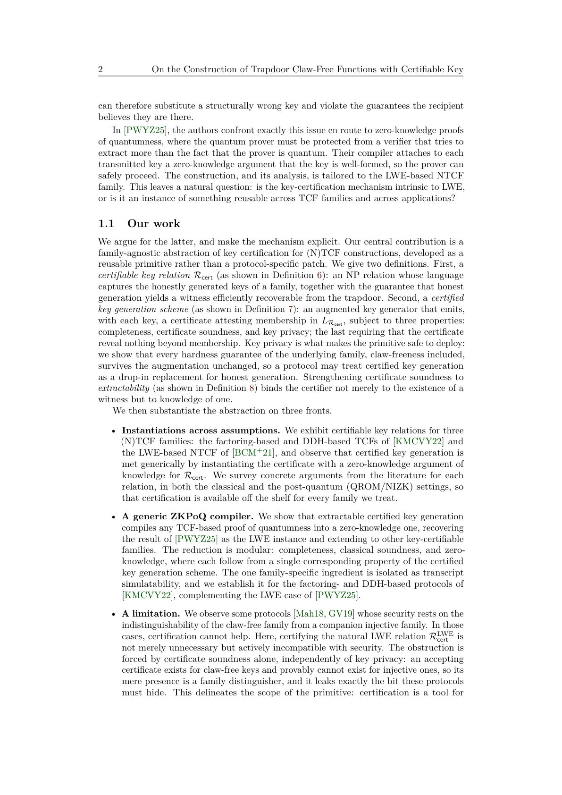
<figcaption class="paper-figure-caption"><b>Fig 1.</b> Low-resolution page preview, page 2</figcaption>
</figure>
<figure class="paper-figure-card">
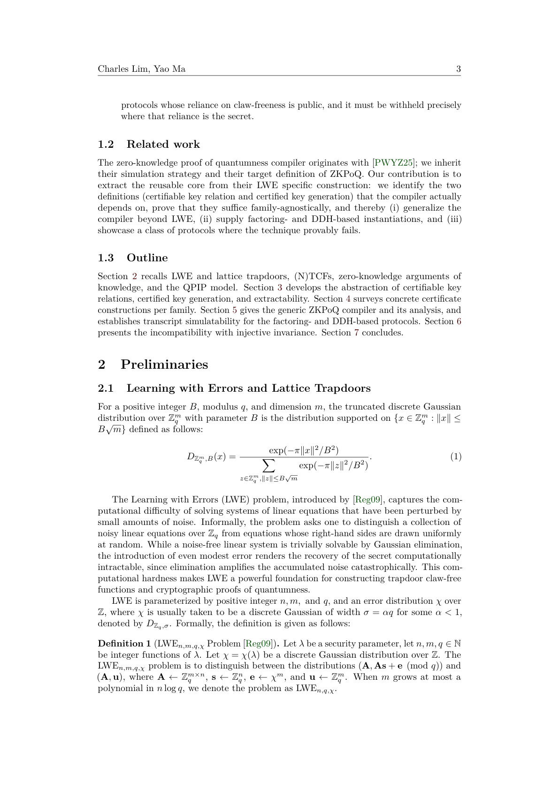
<figcaption class="paper-figure-caption"><b>Fig 2.</b> Low-resolution page preview, page 3</figcaption>
</figure>
<figure class="paper-figure-card">
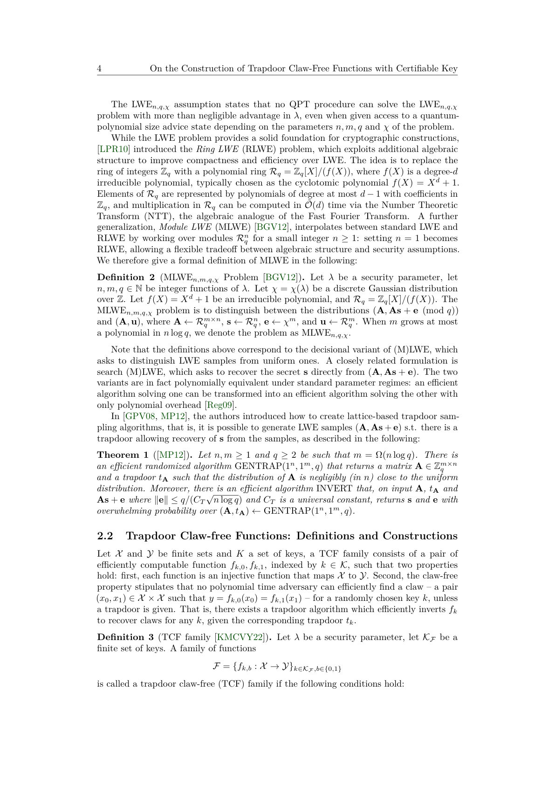
<figcaption class="paper-figure-caption"><b>Fig 3.</b> Low-resolution page preview, page 4</figcaption>
</figure>
<figure class="paper-figure-card">
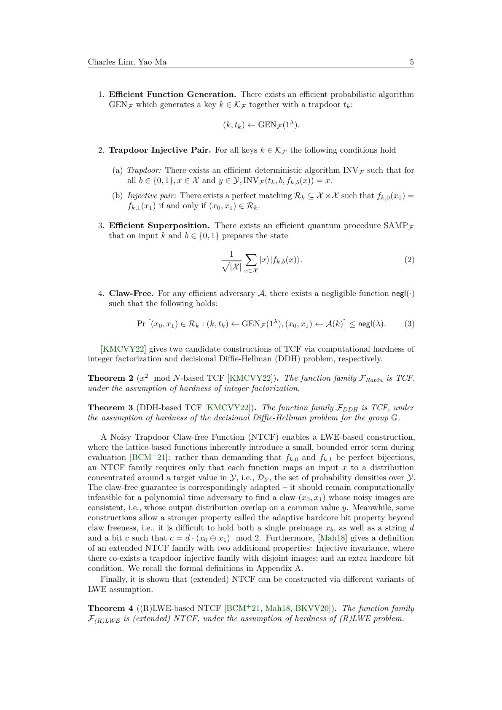
<figcaption class="paper-figure-caption"><b>Fig 4.</b> Low-resolution page preview, page 5</figcaption>
</figure>
<figure class="paper-figure-card">
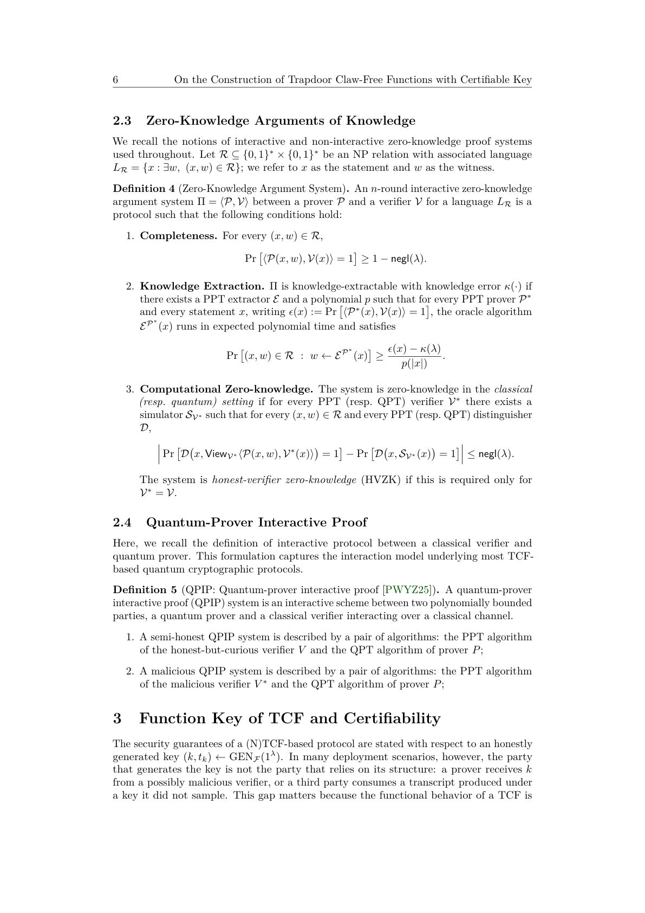
<figcaption class="paper-figure-caption"><b>Fig 5.</b> Low-resolution page preview, page 6</figcaption>
</figure>
</div>

<p><strong>Summary.</strong> This paper develops a general framework for certifying cryptographic keys used in Trapdoor Claw-Free Functions (TCFs). It introduces a key certification scheme that allows protocols to prove quantum properties without assuming the key was generated honestly. This abstraction is powerful, enabling the conversion of various TCF-based proofs into robust zero-knowledge proofs.</p>
<p><strong>Why it may be interesting.</strong> While highly abstract and mathematical, the rigorous development of verifiable cryptographic primitives, especially those linking classical assumptions to quantum proofs, has implications for the theoretical security foundations of quantum computation.</p>
<details>
<summary>Detailed structure</summary>
<p><strong>Main problem.</strong> The paper addresses the cryptographic challenge of ensuring that security proofs based on Trapdoor Claw-Free Functions (TCFs) are robust against the assumption that the secret key was generated honestly.</p>
<p><strong>Main result.</strong> The authors introduce a family-agnostic abstraction for key certification, allowing the construction of a generic compiler that converts any TCF-based proof of quantumness into a zero-knowledge proof.</p>
<p><strong>Method.</strong> The core method involves defining a 'certifiable key relation' and a 'certified key generation' scheme, which are then instantiated for various TCF families (e.g., LWE-based).</p>
<p><strong>Model / system.</strong> The underlying model is classical-quantum cryptography built upon TCFs, which are generalizations of hard problems like factoring or the Learning with Errors (LWE) problem. The focus is on the mathematical structure required for key verification.</p>
<p><strong>Key observables.</strong> The primary observables are the probability differences between quantum measurements performed with the trapdoor versus those performed without it, which must be negligible for security.</p>
<p><strong>Important parameters / regimes.</strong> Security parameters ($\lambda$), dimensions ($n, m$), modulus ($q$), and the error bounds ($\lVert e 
Vert$) associated with lattice problems.</p>
<p><strong>Assumptions / limitations.</strong> The security relies on the hardness of underlying mathematical problems (e.g., LWE, DDH) and the assumption that the key generation process can be certified via an NP relation.</p>
<p><strong>Paper structure.</strong> The paper builds from defining TCFs and their noisy generalizations (NTCF), to formalizing the concept of key certifiability, and culminates in presenting the generic compiler that elevates TCF proofs to zero-knowledge proofs.</p>
</details>
<details>
<summary>Abstract</summary>
<p>Trapdoor claw-free functions (TCFs) underpin much of classical-quantum cryptographic interaction, yet every TCF-based protocol states its guarantees relative to an honestly generated key. We give a family-agnostic abstraction of key certification for (noisy) TCF constructions, built on two notions: a certifiable key relation, an NP relation capturing a family's honest keys with witnesses recoverable from the trapdoor; and certified key generation, which emits with each key a certificate of membership satisfying completeness, certificate soundness with extractability, and key privacy. We instantiate certifiable key relations for different constructions, each met generically by a zero-knowledge argument of knowledge for the relation. As our main application, a generic compiler turns any TCF-based proof of quantumness into a zero-knowledge one, with each security property following from its counterpart in the certification scheme. Finally, we delimit the primitive's reach: for protocols resting on injective invariance, an accepting certificate is itself a family distinguisher, leaking exactly the bit such protocols must hide.</p>
</details>
<p><sub><a href="#top">↑ back to top</a></sub></p>

<p><a id="paper-2609.25211"></a></p>
<h3 id="thermodynamic-proof-of-quantumness-without-structure"><a href="http://arxiv.org/abs/2609.25211v1">Thermodynamic Proof of Quantumness without Structure</a></h3>
<p><strong>Authors:</strong> Florian Meier, Hayata Yamasaki<br>
<strong>Type:</strong> theory · <strong>Category:</strong> quantum information and computing · <strong>PDF:</strong> <a href="https://arxiv.org/pdf/2609.25211v1">https://arxiv.org/pdf/2609.25211v1</a><br>
<strong>Analysis basis:</strong> full PDF text, analyzed in chunks
<strong>Topic relevance:</strong> <code>quantum measurements</code> <strong>1/5</strong></p>
<div class="figure-strip-hint">↔ Scroll figures horizontally</div>
<div class="paper-figures-scroll">
<figure class="paper-figure-card">
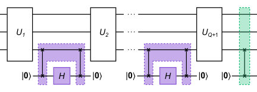
<figcaption class="paper-figure-caption"><b>Fig 1.</b> FIG. 2. Adaptive oracle computation performed by the adver- sary. Given the key k and the input 1n, the adversary applies internal reversible operations U1, . . . , UQ+1 interleaved with Q oracle queries. The number of queries may depend on pre- vious oracle outputs in the classical case, and the oracle may be queried coherently in the quantum case. The final register contains the proof string π returned to the verifier, and the adversary’s internal memory state ρ|H,k. The irreversible era- sure step used to close the thermodynamic cycle is not shown.</figcaption>
</figure>
<figure class="paper-figure-card">
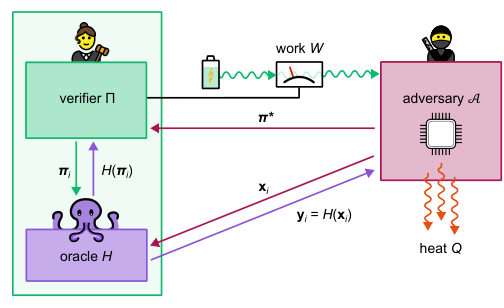
<figcaption class="paper-figure-caption"><b>Fig 2.</b> FIG. 1. Thermodynamic proof of quantumness. The verifier samples an oracle H and gives oracle access to an adversary. The adversary queries inputs xi, receives outputs yi = H(xi), and returns a proof string π. The verifier checks the proof and simultaneously measures the energy consumption W of the adversary. A correct proof with energy consumption below the classical thermodynamic lower bound certifies quantum- ness of the adversary’s computation.</figcaption>
</figure>
<figure class="paper-figure-card">
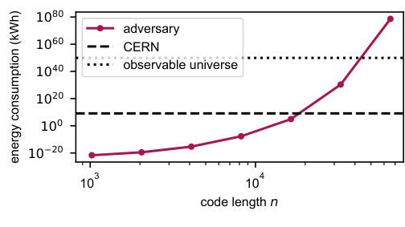
<figcaption class="paper-figure-caption"><b>Fig 3.</b> FIG. 3. Classical energy-consumption lower bound for a rep- resentative parameter choice at T = 300 K. The dots show kBTS using the explicit entropy bound from the Supplemen- tal Material. The comparison lines indicate the annual energy consumption of CERN [24] and the annual luminosity of the observable universe [25].</figcaption>
</figure>
<figure class="paper-figure-card">
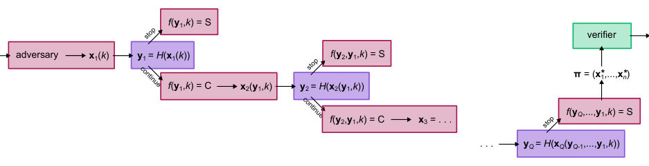
<figcaption class="paper-figure-caption"><b>Fig 4.</b> FIG. 4. Decision tree for a classical adaptive algorithm. The adversary is instantiated with a key k. Based on k, the first input x1(k) is generated and queried to the oracle, producing the output y1 = H(x1(k)). The stopping rule f1(y1, k) determines whether the adversary stops or continues. If it continues, the next query input may depend on the previous output, e.g., x2(y1, k). The algorithm proceeds until the first stopping event, after which the adversary outputs a proof string π to the verifier.</figcaption>
</figure>
</div>

<p><strong>Summary.</strong> This paper introduces a novel thermodynamic proof of quantumness, showing that the energy required by a classical computer to solve a specific search problem grows exponentially with the security parameter. By contrasting this with the polynomial energy cost of the quantum solution, the authors establish that low energy consumption serves as a macroscopic, model-agnostic certification of quantum computation.</p>
<p><strong>Why it may be interesting.</strong> It provides a resource-theoretic, model-agnostic witness of quantum computation based on macroscopic thermodynamics, which is a powerful conceptual tool for quantum information theory.</p>
<details>
<summary>Detailed structure</summary>
<p><strong>Main problem.</strong> The paper addresses the challenge of proving genuine quantum advantage without relying on computational hardness assumptions.</p>
<p><strong>Main result.</strong> It demonstrates that for a specific unstructured search problem, any classical machine must dissipate an exponentially growing amount of energy, whereas the quantum counterpart requires only polynomial energy consumption.</p>
<p><strong>Method.</strong> The proof uses Landauer's principle to establish a thermodynamic lower bound on energy consumption based on the entropy generated by the classical adversary interacting with a random oracle.</p>
<p><strong>Model / system.</strong> The model involves a thermodynamic cycle where a classical adversary attempts to solve the Yamakawa–Zhandry search problem relative to a uniformly random oracle. The quantum prover performs the same task using quantum gates.</p>
<p><strong>Key observables.</strong> Energy consumption (W) and the entropy (S[rho]) generated by the classical computation.</p>
<p><strong>Important parameters / regimes.</strong> The security parameter ($\lambda$), the success probability ($\Delta$), and the constant $c$ derived from the problem structure.</p>
<p><strong>Assumptions / limitations.</strong> The proof assumes the thermodynamic cycle involves cyclic reuse and erasure, and it relies on the uniformity property of unqueried oracle values.</p>
<p><strong>Figures summary.</strong> Figure 1 illustrates the thermodynamic proof setup involving the adversary and energy measurement. Figure 2 details the adaptive oracle computation. Figure 3 compares the derived classical energy lower bound against observable energy scales.</p>
<p><strong>Paper structure.</strong> The paper builds the argument by first establishing the classical entropy lower bound using information-theoretic tools (Lemma B.1, B.4), which is then translated into an energy lower bound via Landauer's principle. It contrasts this with the polynomial energy cost of the quantum solution.</p>
</details>
<details>
<summary>Abstract</summary>
<p>Demonstrating that a machine performs genuinely quantum operations is a central challenge in quantum information processing. Existing proofs of quantumness typically rely on computational tasks that are infeasible for classical machines under assumptions such as computational hardness, or explicit bounds on classical runtime, memory, or oracle queries. Here we introduce an alternative paradigm: a thermodynamic proof of quantumness based on energy consumption. Using the search problem of Yamakawa and Zhandry with a structureless uniformly random oracle, we show that any classical machine solving the task with constant success probability must generate entropy that grows exponentially with the security parameter. By Landauer's principle, this implies an exponential lower bound on heat dissipation and hence on the energy consumption of any cyclic classical implementation. In contrast, the corresponding quantum prover solves the task with polynomial query and gate complexity, giving polynomial energy consumption under standard assumptions for quantum implementations. Thus, in the random-oracle setting, sufficiently low energy consumption in a successful implementation certifies quantumness through a macroscopic thermodynamic observation of energy consumption.</p>
</details>
<p><sub><a href="#top">↑ back to top</a></sub></p>
<h2 id="other-papers-27">Other papers (27)</h2>
<p><em>Papers from primary archives without highlighted authors or any topic match. Click to expand.</em></p>
<details>
<summary>Show other papers</summary>

<p><a id="paper-2609.25680"></a></p>
<h3 id="math759math-does-not-relativize"><a href="http://arxiv.org/abs/2609.25680v1">$\mathsf{BQP} \subseteq \mathsf{IP}$ Does Not Relativize</a></h3>
<p><strong>Authors:</strong> Adam Bouland, Andrew Huang, Anand Natarajan, Itay Shalit, Avishay Tal<br>
<strong>Type:</strong> theory · <strong>Category:</strong> quantum information and computing · <strong>PDF:</strong> <a href="https://arxiv.org/pdf/2609.25680v1">https://arxiv.org/pdf/2609.25680v1</a><br>
<strong>Analysis basis:</strong> full PDF text, analyzed in chunks</p>
<div class="figure-strip-hint">↔ Scroll figures horizontally</div>
<div class="paper-figures-scroll">
<figure class="paper-figure-card">
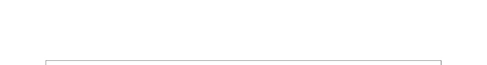
<figcaption class="paper-figure-caption"><b>Fig 1.</b> Figure 1: A Gaussian smoothing of the sign function. The function hδ(x) = 2Φ( √</figcaption>
</figure>
</div>
<p><strong>Summary.</strong> This paper resolves a major open question by proving that the containment BQP $\subseteq$ IP does not hold relative to a specific oracle. The authors achieve this separation by analyzing the Forrelation problem, which requires distinguishing between two probability distributions using quantum algorithms versus classical interactive protocols. The result implies that any classical verification of quantum computation must rely on techniques beyond simple oracle separation.</p>
<p><strong>Why it may be interesting.</strong> This work provides a deep theoretical understanding of the limits of classical verification for quantum computation, suggesting that unconditional quantum advantage requires non-relativizing techniques, which is a major open problem in quantum complexity theory.</p>
<details>
<summary>Detailed structure</summary>
<p><strong>Main problem.</strong> To resolve the open question of whether the quantum complexity class BQP is contained within the class of languages verifiable by classical interactive proofs (IP), specifically investigating if this containment holds in the unrelativized setting.</p>
<p><strong>Main result.</strong> The authors prove that there exists a classical oracle O relative to which BQP is not contained in IP, demonstrating that the containment BQP $\subseteq$ IP does not relativize.</p>
<p><strong>Method.</strong> The proof constructs the separation using the Forrelation problem, which is analyzed by approximating the average-max circuits characterizing IP with smooth, convex functions. The separation is achieved by showing that the expected acceptance probability differs significantly between the Forrelation distribution and the uniform distribution.</p>
<p><strong>Model / system.</strong> The theoretical model involves quantum computation (BQP) and classical interactive proof systems (IP), formalized using average-max circuits. The separation is demonstrated relative to an explicitly constructed oracle O.</p>
<p><strong>Key observables.</strong> The difference in the expected acceptance probability of an IP verifier when distinguishing between the Forrelation distribution and the uniform distribution.</p>
<p><strong>Important parameters / regimes.</strong> The complexity parameters include the query efficiency of quantum algorithms and the polynomial communication/query bounds for classical protocols.</p>
<p><strong>Assumptions / limitations.</strong> The proof relies on approximating Avg-Max circuits by smooth, convex functions with controlled first and second derivatives, and the use of hybrid arguments to compare probability distributions.</p>
<p><strong>Figures summary.</strong> Figure 1 illustrates the Gaussian smoothing of the sign function, $h_\delta(x)$, used in the analysis.</p>
<p><strong>Paper structure.</strong> The paper proceeds by first establishing the structural result that approximates IP protocols using convex functions. It then applies this to the Forrelation problem, showing a quantum advantage. Finally, a diagonalization argument constructs the oracle O to prove the separation BQP$^O 
ot\subseteq$ IP$^O$.</p>
</details>
<details>
<summary>Abstract</summary>
<p>We construct an oracle relative to which $\mathsf{BQP} \not\subseteq \mathsf{IP}$, resolving a long-standing open question in quantum complexity theory. Together with recent work due to Aaronson et al., our work also gives the first oracle separation between $\mathsf{IP}$ and $\mathsf{MIP}$, answering a question dating back to Fortnow's thesis. Our separation is based on the Forrelation problem, where given Boolean functions $f$ and $g$, the goal is to determine if $f$ is correlated with the Fourier spectrum of $g$. While this task is solvable by a query-efficient quantum algorithm, we show that it admits no classical interactive protocol with polynomial communication and a polynomial-query verifier.   Our proof is based on (i) a new structural result showing how to approximate Avg-Max circuits (which are well-known to capture the power of interactive proofs in the oracular setting) by convex functions with small first and second derivatives and (ii) a novel analysis establishing that the Forrelation distribution suggested by Aaronson and Ambainis fools such functions.   Our results imply that any prover-efficient classical interactive protocol for $\mathsf{BQP}$ must rely on non-relativizing techniques. This might serve as a partial explanation for the lack of progress towards doubly-efficient, unconditionally sound classical verification of quantum computation.</p>
</details>
<p><sub><a href="#top">↑ back to top</a></sub></p>

<p><a id="paper-2609.26591"></a></p>
<h3 id="a-new-method-for-manipulating-circuits-application-to-quantum-adders"><a href="http://arxiv.org/abs/2609.26591v1">A New Method For Manipulating Circuits, Application To Quantum Adders</a></h3>
<p><strong>Authors:</strong> William Schober, Scott Wesley<br>
<strong>Type:</strong> theory · <strong>Category:</strong> quantum information and computing · <strong>PDF:</strong> <a href="https://arxiv.org/pdf/2609.26591v1">https://arxiv.org/pdf/2609.26591v1</a><br>
<strong>Analysis basis:</strong> full PDF text, analyzed in chunks</p>
<div class="figure-strip-hint">↔ Scroll figures horizontally</div>
<div class="paper-figures-scroll">
<figure class="paper-figure-card">
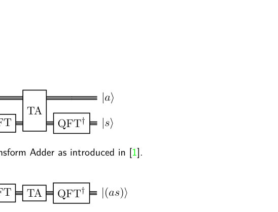
<figcaption class="paper-figure-caption"><b>Fig 1.</b> Figure 3: The QFT-Adder drawn with the bit order (ab) = a0b0...an−1bn−1 used in this paper. The interleaving of a and b causes the QFT box to overlap the a register, even though it does not act there. Note that these circuits are equivalent up-to conjugation by swaps.</figcaption>
</figure>
<figure class="paper-figure-card">
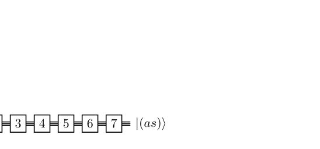
<figcaption class="paper-figure-caption"><b>Fig 2.</b> Figure 4: The Ripple-Carry Adder first introduced in [4]. Its seven stages are defined in Section 4.</figcaption>
</figure>
<figure class="paper-figure-card">
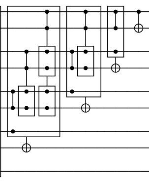
<figcaption class="paper-figure-caption"><b>Fig 3.</b> Figure 5: The Carry-Lookahead Adder described in Section 3 for n = 6. The CZ = Z⊙Z gates identify generating bit pairs whose addition will generate a carry, and the Z ⊗Z boxes identify propagating bit pairs whose addition would propagate a carry from above.</figcaption>
</figure>
<figure class="paper-figure-card">
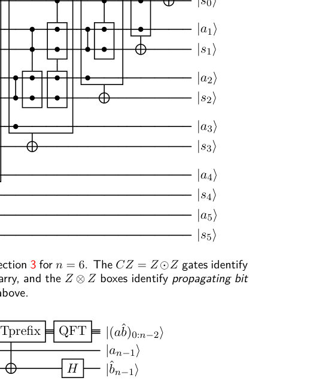
<figcaption class="paper-figure-caption"><b>Fig 4.</b> Figure 6: Recursive definition of the Quantum Fourier Transform circuit.</figcaption>
</figure>
<figure class="paper-figure-card">
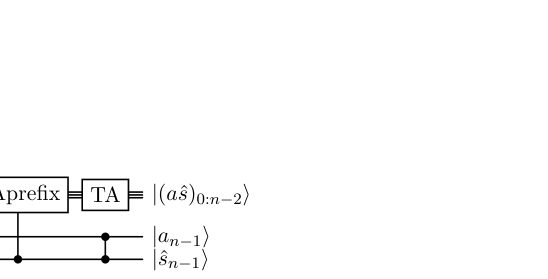
<figcaption class="paper-figure-caption"><b>Fig 5.</b> Figure 7: Recursive definition of the Transform Addition circuit.</figcaption>
</figure>
</div>
<p><strong>Summary.</strong> This paper rigorously proves the equivalence between three major quantum adder designs—QFT-based, Carry-Lookahead, and Ripple-Carry—by performing explicit, gate-level circuit transpilation. The work introduces a novel, ancilla-free CL-Adder and demonstrates that these fundamentally different approaches compute the same function using equivalent quantum circuits.</p>
<p><strong>Why it may be interesting.</strong> While the topic is quantum computation, the rigorous, gate-level comparison of different adder architectures (QFT vs. Carry-Lookahead vs. Ripple-Carry) provides deep insights into the structural overhead and computational equivalence of fundamental quantum arithmetic operations.</p>
<details>
<summary>Detailed structure</summary>
<p><strong>Main problem.</strong> The paper aims to establish the equivalence between three distinct quantum adder circuits: one based on the Quantum Fourier Transform (QFT), one based on the classical Ripple-Carry (RC) logic, and a novel Carry-Lookahead (CL) adder.</p>
<p><strong>Main result.</strong> The authors prove that the QFT-Adder, the CL-Adder, and the RC-Adder are all equivalent through explicit, gate-level transpilation, culminating in an ancilla-free CL-Adder implementation.</p>
<p><strong>Method.</strong> The core method involves using hierarchical quantum circuits and algebraic manipulation, applying inductive proofs and known quantum circuit identities to transform one adder structure into another.</p>
<p><strong>Model / system.</strong> The system modeled is quantum addition implemented via quantum circuits. The circuits are compared across three architectures: QFT-based, CL-based, and RC-based, utilizing standard reversible gatesets like {X, CNOT, Toffoli}.</p>
<p><strong>Key observables.</strong> Circuit depth, the number of required ancilla qubits (achieving ancilla-free operation is key), and the explicit gate-level transformation between the three adder forms.</p>
<p><strong>Important parameters / regimes.</strong> The bit length ($n$) of the numbers being added, and the specific gate sets used for representation.</p>
<p><strong>Assumptions / limitations.</strong> The equivalence proofs rely heavily on specific commutation and anti-commutation relations between quantum gates and the assumption that the CL-Adder structure can be successfully mapped onto the QFT-Adder structure.</p>
<p><strong>Figures summary.</strong> Figures illustrate the graphical language for hierarchical circuits, the recursive definitions of the QFT-Adder and CL-Adder, and detailed steps showing the transpilation process, such as pushing the CL-Adder prefix through the stages of the RC-Adder.</p>
<p><strong>Paper structure.</strong> The paper progresses by first introducing the QFT-Adder and the RC-Adder, then presenting the novel CL-Adder. It then proves the equivalence $ ext{QFT-Adder} \leftrightarrow  ext{CL-Adder}$ via transpilation, followed by proving $ ext{CL-Adder} \leftrightarrow   ext{RC-Adder}$ through a final series of gate manipulations and inductive steps.</p>
</details>
<details>
<summary>Abstract</summary>
<p>We use a new technique for manipulating controlled quantum circuits to convert between two distinct types of quantum adders, one based on the Quantum Fourier Transform and the other based on the Ripple-Carry technique from classical reversible logic. This conversion takes the form of an explicit gate-level transpilation. We also present a new quantum adder with a natural interpretation as a kind of Carry-Lookahead adder that uses no ancillas.</p>
</details>
<p><sub><a href="#top">↑ back to top</a></sub></p>

<p><a id="paper-2609.26712"></a></p>
<h3 id="a-quantum-lower-bound-for-path-finding-in-welded-trees"><a href="http://arxiv.org/abs/2609.26712v1">A quantum lower bound for path finding in welded trees</a></h3>
<p><strong>Authors:</strong> Joseph Carolan, Andrew M. Childs, Matthew Coudron, Amin Shiraz Gilani<br>
<strong>Type:</strong> theory · <strong>Category:</strong> quantum information and computing · <strong>PDF:</strong> <a href="https://arxiv.org/pdf/2609.26712v1">https://arxiv.org/pdf/2609.26712v1</a><br>
<strong>Analysis basis:</strong> full PDF text, analyzed in chunks</p>
<div class="figure-strip-hint">↔ Scroll figures horizontally</div>
<div class="paper-figures-scroll">
<figure class="paper-figure-card">
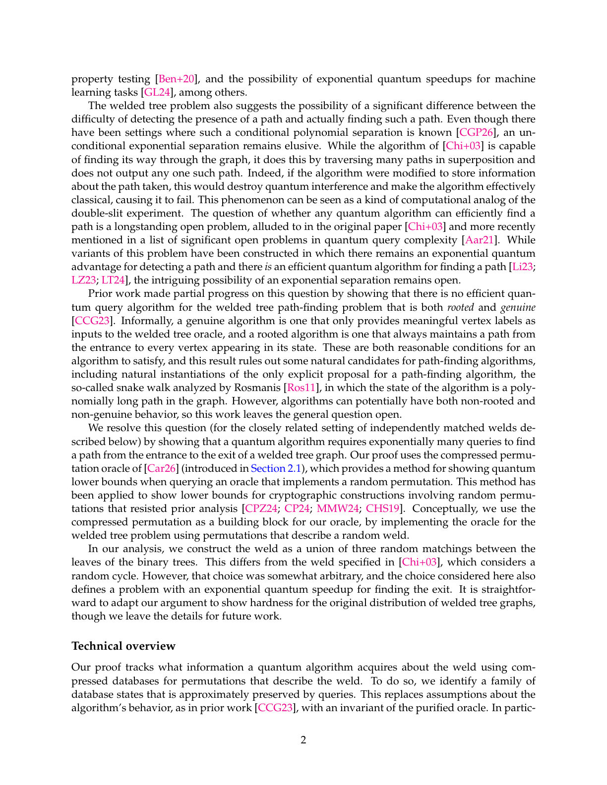
<figcaption class="paper-figure-caption"><b>Fig 1.</b> Low-resolution page preview, page 2</figcaption>
</figure>
<figure class="paper-figure-card">
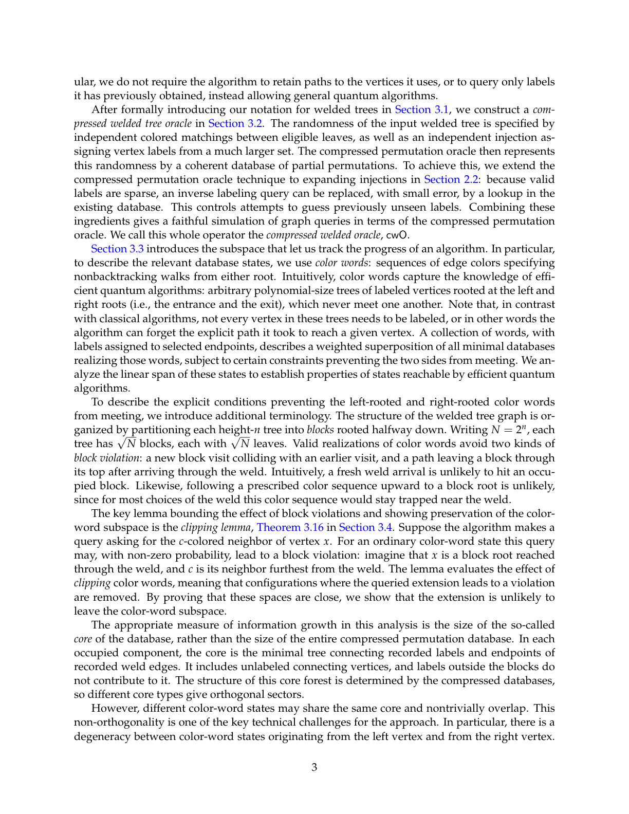
<figcaption class="paper-figure-caption"><b>Fig 2.</b> Low-resolution page preview, page 3</figcaption>
</figure>
<figure class="paper-figure-card">
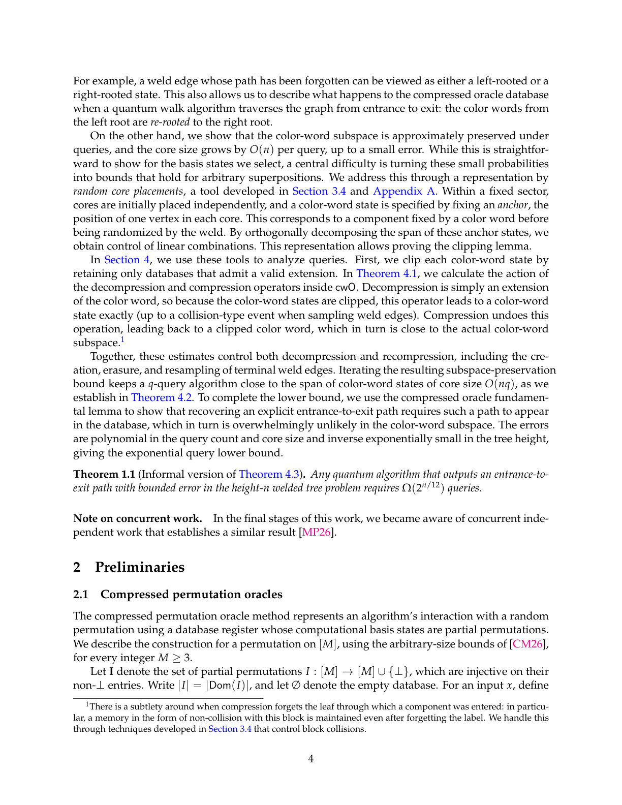
<figcaption class="paper-figure-caption"><b>Fig 3.</b> Low-resolution page preview, page 4</figcaption>
</figure>
<figure class="paper-figure-card">
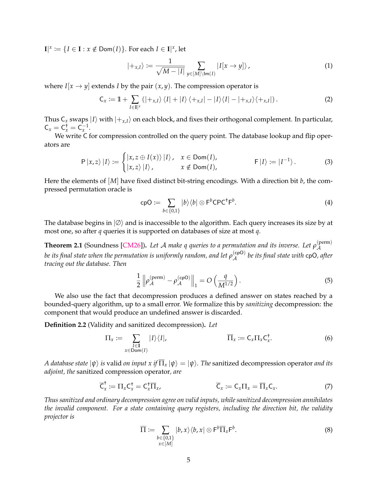
<figcaption class="paper-figure-caption"><b>Fig 4.</b> Low-resolution page preview, page 5</figcaption>
</figure>
<figure class="paper-figure-card">
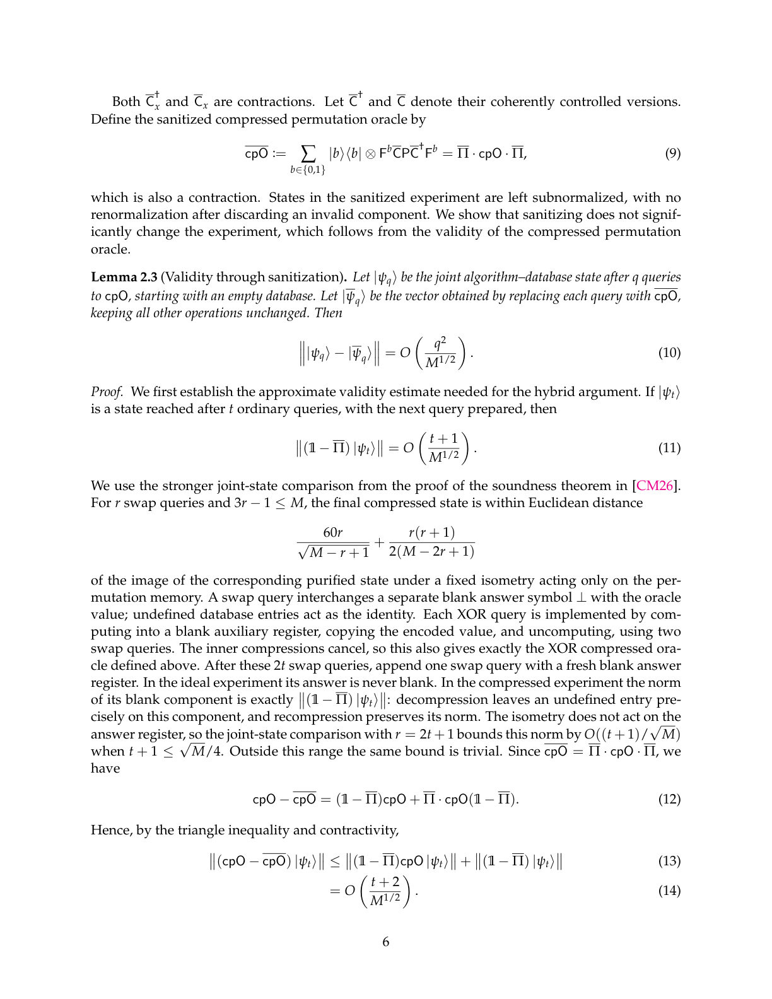
<figcaption class="paper-figure-caption"><b>Fig 5.</b> Low-resolution page preview, page 6</figcaption>
</figure>
</div>
<p><strong>Summary.</strong> This paper establishes a quantum lower bound for path finding in welded trees, proving that the task requires an exponential number of queries. The authors use advanced techniques involving compressed oracles and linear algebra to show that while quantum walks offer exponential speedup for exploration, finding the path is fundamentally hard. This highlights a crucial distinction between quantum search/exploration and quantum pathfinding.</p>
<p><strong>Why it may be interesting.</strong> This work provides a concrete example in quantum complexity theory demonstrating a separation: quantum walks can explore exponentially faster, but finding the path itself is provably hard, which is a key topic in quantum computation theory.</p>
<details>
<summary>Detailed structure</summary>
<p><strong>Main problem.</strong> To prove a quantum lower bound showing that finding a path between the roots of a welded tree graph requires an exponentially large number of quantum queries.</p>
<p><strong>Main result.</strong> The authors prove that any quantum algorithm must perform $\Omega(2^{n/12})$ queries to find a path in a height-$n$ welded tree, establishing a separation between quantum exploration speedup and path-finding tractability.</p>
<p><strong>Method.</strong> The proof employs compressed permutation oracles and analyzes the growth of information recorded in a 'core' of the database, using advanced linear algebra and norm bounding techniques.</p>
<p><strong>Model / system.</strong> The model is the 'welded tree' graph, formed by joining the leaves of two binary trees via a 'weld.' The analysis is performed using quantum algorithms interacting with compressed permutation oracles.</p>
<p><strong>Key observables.</strong> Core size, color words, and the norm of the difference between projected subspaces ($\| \Pi_{H_{x,c}} - \Pi_H \|$).</p>
<p><strong>Important parameters / regimes.</strong> Tree height $n$, query complexity $\Omega(2^{n/12})$, and error bounds related to $t$ (number of blocks) and $N$ (structure size).</p>
<p><strong>Assumptions / limitations.</strong> The analysis relies on bounding collision probabilities and assuming the existence of fixed sectors for the main proof steps.</p>
<p><strong>Paper structure.</strong> The paper builds from preliminaries on compressed permutation oracles, develops techniques using color-word subspaces, and culminates in detailed linear algebraic estimates (Lemma A.5 through A.9) to bound the difference between the ideal and clipped state spans.</p>
</details>
<details>
<summary>Abstract</summary>
<p>In the welded tree problem, an algorithm is tasked with navigating a graph formed from two binary trees joined at the leaves through a ``weld'' of connecting edges. A quantum walk can navigate from root to root exponentially faster than any classical algorithm. However, known efficient quantum algorithms cannot find a path between the roots, as recording the path destroys constructive interference and thus the speedup. We prove that this is inherent: any quantum algorithm needs exponentially many queries to find a path between the roots of an independently matched welded tree graph. This provides an example of a problem that a quantum computer can solve exponentially faster than any classical algorithm by exploring exponentially many paths in superposition, but where it is provably intractable to find any such path. The proof uses compressed permutation oracles to record the progress of a quantum algorithm as it queries the graph. We show that the compressed database remains path-free up to a small error. By controlling such errors and bounding the progress of the algorithm with each compressed oracle query, we show that $Ω(2^{n/12})$ queries are required to find a path in a height-$n$ tree with constant success probability.</p>
</details>
<p><sub><a href="#top">↑ back to top</a></sub></p>

<p><a id="paper-2609.25571"></a></p>
<h3 id="a-scalable-entanglement-distribution-framework-for-hybrid-quantum-networks"><a href="http://arxiv.org/abs/2609.25571v1">A scalable entanglement distribution framework for hybrid quantum networks</a></h3>
<p><strong>Authors:</strong> Yaqi Zhao, Kan He, Jinchuan Hou, Yongtao Zhang, Nicolò Lo Piparo, Xiangyi Meng<br>
<strong>Type:</strong> theory · <strong>Category:</strong> quantum information and computing · <strong>PDF:</strong> <a href="https://arxiv.org/pdf/2609.25571v1">https://arxiv.org/pdf/2609.25571v1</a><br>
<strong>Analysis basis:</strong> full PDF text, analyzed in chunks</p>
<div class="figure-strip-hint">↔ Scroll figures horizontally</div>
<div class="paper-figures-scroll">
<figure class="paper-figure-card">
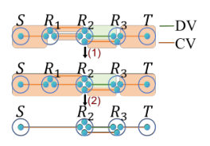
<figcaption class="paper-figure-caption"><b>Fig 1.</b> FIG. 2. Homogeneous consolidation of a hybrid QN. The net- work architecture comprises a mixture of CV links (TMSVSs, orange) and DV links (two-qubit states, green). (Step 1) Locally homogeneous subgraphs consisting of only a single resource type are repeatedly identified within the intertwined network, such as the {S, R1, R2} and {R3, T} clusters. (Step 2) Each identified subgraph is independently reduced to a single effective link following the resource-specific series and parallel rules specified in Table I. This consolidation process transforms the complex initial topology into an irreducible hybrid QN, where no further homogeneous reduction rules remain applicable.</figcaption>
</figure>
<figure class="paper-figure-card">
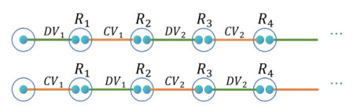
<figcaption class="paper-figure-caption"><b>Fig 2.</b> FIG. 4. Two types of series QNs that are genuinely hybrid. The first one is DV-end type with states ordered as DV, CV, DV, CV,..., DV, and another one is CV-end type, following the sequence CV, DV, CV, DV, ..., CV.</figcaption>
</figure>
<figure class="paper-figure-card">
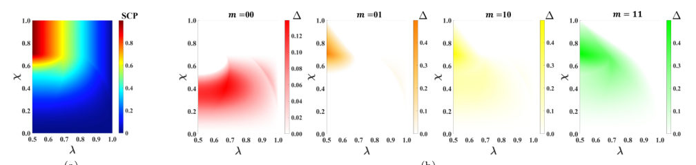
<figcaption class="paper-figure-caption"><b>Fig 3.</b> FIG. 5. Performance of hybrid swapping protocol with different operation orders. We consider a four-node series QN (S −R1 − R2 −T) with the initial state |ψχ⟩SR1 ⊗|ψλ⟩R1R2 ⊗|ψχ⟩R2T . (a) The total success probability (SCP) achieved by the optimized hybrid protocol, where the swapping operation order is always optimized with respect to λ and χ values. (b) The performance gain ∆≥0 compared to four alternative fixed-order protocols, where the swapping orders are fixed at m ∈{00, 01, 10, 11}. Here, the bitstring m identifies the protocol used at each intermediate node: m = 00 represents applying the majorization-based protocol at both R1 and R2, while m = 11 denotes a purely homodyne-based...</figcaption>
</figure>
<figure class="paper-figure-card">
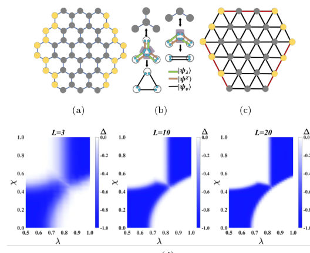
<figcaption class="paper-figure-caption"><b>Fig 4.</b> FIG. 6. Entanglement distribution operations on hybrid double-link honeycomb lattice. (a) We consider a finite-size double- link honeycomb lattice with L = 3 layers extended outward from a central hexagon. (b) Each blue segment is a shorthand for two states in parallel—|ψλ⟩(green link) and |ψχ⟩(orange link). Therefore, each trifurcation (or bifurcation when on the boundary) can be decomposed into 3 (or 2) pairs of subsystems (purple region). The hybrid swapping pre-processing is then implemented by performing entanglement swapping on every such pair of subsystems, after which the lattice transforms into a triangular lattice. (c) In the triangular lattice, each black link represents a state...</figcaption>
</figure>
</div>
<p><strong>Summary.</strong> This paper proposes a scalable theoretical framework for distributing entanglement in hybrid quantum networks that combine discrete-variable and continuous-variable quantum links. By unifying entanglement swapping and concentration rules onto graph theory principles, it shows that this hybrid approach can enhance end-to-end entanglement generation compared to traditional methods. This provides a crucial theoretical roadmap for building large-scale, interoperable quantum internet infrastructure.</p>
<p><strong>Why it may be interesting.</strong> This work is highly relevant as it tackles the fundamental engineering challenge of integrating disparate quantum hardware modalities (DV and CV) into a single, scalable quantum internet architecture.</p>
<details>
<summary>Detailed structure</summary>
<p><strong>Main problem.</strong> The paper addresses the challenge of creating a scalable entanglement distribution framework capable of operating across heterogeneous quantum hardware platforms that utilize both discrete (DV) and continuous (CV) variable entanglement.</p>
<p><strong>Main result.</strong> The proposed hybrid entanglement distribution scheme demonstrates potential performance advantages over traditional point-to-point generation, particularly within series-parallel network topologies.</p>
<p><strong>Method.</strong> The authors developed a theoretical framework by mapping hybrid entanglement swapping and concentration protocols onto a unified set of series and parallel graph rules, utilizing homogeneous consolidation preprocessing.</p>
<p><strong>Model / system.</strong> The model is a Quantum Network (QN) composed of links representing bipartite entangled states, which can be either DV (two-qubit states) or CV (TMSVSs). The analysis focuses on network topologies like series-parallel and honeycomb lattices.</p>
<p><strong>Key observables.</strong> Total Singlet Conversion Probability (SCP), Concurrence (c), and Ratio Negativity ($\chi_N$).</p>
<p><strong>Important parameters / regimes.</strong> The performance is analyzed based on the structure of the network (series-parallel vs. non-series-parallel) and the specific hybrid swapping operations used (homodyne vs. majorization).</p>
<p><strong>Assumptions / limitations.</strong> The analysis assumes ideal physical conditions, although the framework is designed to absorb realistic hardware imperfections into effective resource parameters.</p>
<p><strong>Figures summary.</strong> Figures illustrate various QN topologies (series-parallel vs. non-series-parallel) and detail the step-by-step process of homogeneous consolidation used to simplify the complex hybrid network structure.</p>
<p><strong>Paper structure.</strong> The paper first establishes the need for hybrid frameworks, then details the homogeneous consolidation strategy to reduce the network to an irreducible hybrid junction. It subsequently analyzes basic hybrid swapping protocols (homodyne and majorization) before presenting the final scalable protocol for series QNs.</p>
</details>
<details>
<summary>Abstract</summary>
<p>The realization of a scalable quantum network (QN) hinges on the efficient distribution of entanglement across heterogeneous hardware platforms. While traditional QN frameworks are often restricted to single-encoding schemes, relying exclusively on either discrete (DV) or continuous (CV) variables, such segregated architectures limit the capacity and interoperability of large-scale systems. Here, we propose a scalable hybrid entanglement distribution scheme that bridges these domains by mapping hybrid entanglement swapping and concentration at DV-CV interfaces onto a unified set of series and parallel graph rules. We demonstrate that our hybrid approach exhibits a potential performance advantage over traditional point-to-point generation of maximally entangled states, achieving enhanced end-to-end entanglement within series-parallel topologies. These results provide a robust theoretical foundation for designing resource-efficient, interpretable architectures for the future quantum internet.</p>
</details>
<p><sub><a href="#top">↑ back to top</a></sub></p>

<p><a id="paper-2609.26736"></a></p>
<h3 id="a-syndrome-extraction-framework-for-distributed-lattice-surgery-on-arbitrary-rotated-surface-code-layouts"><a href="http://arxiv.org/abs/2609.26736v1">A Syndrome-Extraction Framework for Distributed Lattice Surgery on Arbitrary Rotated Surface-Code Layouts</a></h3>
<p><strong>Authors:</strong> Pritesh Thakur, Daniel Dilley, Zain Saleem<br>
<strong>Type:</strong> theory · <strong>Category:</strong> quantum information and computing · <strong>PDF:</strong> <a href="https://arxiv.org/pdf/2609.26736v1">https://arxiv.org/pdf/2609.26736v1</a><br>
<strong>Analysis basis:</strong> full PDF text, analyzed in chunks</p>
<div class="figure-strip-hint">↔ Scroll figures horizontally</div>
<div class="paper-figures-scroll">
<figure class="paper-figure-card">
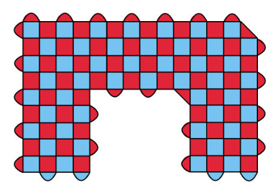
<figcaption class="paper-figure-caption"><b>Fig 1.</b> Figure 1: Surface code layout for using lattice surgery to perform logical Pauli-XX measurement between two distance surface code patches. Red (blue) plaquettes denote X (Z) type stabilizers.</figcaption>
</figure>
<figure class="paper-figure-card">
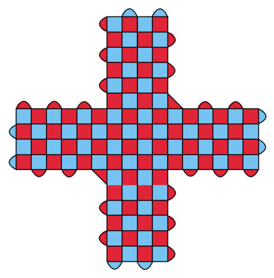
<figcaption class="paper-figure-caption"><b>Fig 2.</b> Figure 2: Surface code layout for Cross-shaped spatial junc- tion merge. Red (blue) plaquettes denote X (Z) type stabi- lizers.</figcaption>
</figure>
<figure class="paper-figure-card">
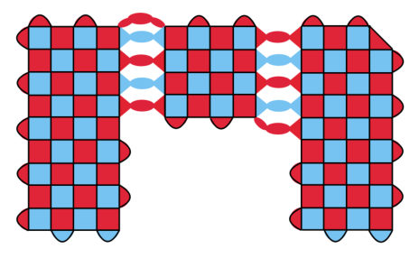
<figcaption class="paper-figure-caption"><b>Fig 3.</b> Figure 3: Merged surface-code layout for a logical Pauli- XX measurement. Red (blue) plaquettes denote X (Z) type stabilizers. Each ancilla at the seam is split into two two-body checks. This allows us to join patches of differing boundary structure across a module boundary.</figcaption>
</figure>
<figure class="paper-figure-card">
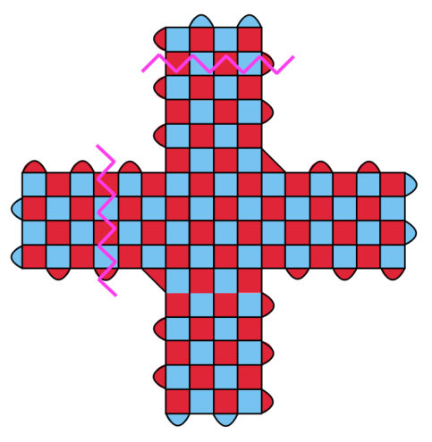
<figcaption class="paper-figure-caption"><b>Fig 4.</b> Figure 4: In the most pessimistic assumption, the two ma- genta chains in this picture reflect the two possible directions from which the hook-induced logical-X error chains could oc- cur during the crossing-shaped junction merge. Such X-type hook error chains halve the distance of the Z-logical observ- able that is being observed during this lattice surgery merge.</figcaption>
</figure>
<figure class="paper-figure-card">

<figcaption class="paper-figure-caption"><b>Fig 5.</b> Figure 5: CRUMBLE circuit showing the cross-shaped spatial junction merge layout being split into three patches that can keep their own hook-avoiding N/Z shaped schedule at min- imum circuit depth. Red polygons denote X-type stabilizer checks and blue polygons denote Z-type stabilizer checks. The Z-type and X-type stabilizers are split differently at the seam, as reflected by the blue and red polygons at the seam.</figcaption>
</figure>
</div>
<p><strong>Summary.</strong> This paper presents a novel seam construction framework to enable fault-tolerant lattice surgery on complex, rotated surface code layouts. By strategically splitting stabilizers at inter-module seams and using specific gate sequences, the authors successfully confine high link errors away from the bulk code. This results in a robust method that maintains low logical error rates even when link noise is significantly higher than the bulk error rate.</p>
<p><strong>Why it may be interesting.</strong> While highly theoretical, the focus on minimizing circuit depth and managing error propagation in modular quantum architectures is crucial for realizing scalable quantum computation, which is a major goal in quantum information science.</p>
<details>
<summary>Detailed structure</summary>
<p><strong>Main problem.</strong> The paper addresses the challenge of performing distributed lattice surgery on arbitrary rotated surface-code layouts while avoiding distance-reducing hook errors and maintaining low circuit depth.</p>
<p><strong>Main result.</strong> The proposed seam construction successfully confines elevated link errors at the seams, leading to lower and more stable logical error rates compared to existing fault-tolerance frameworks.</p>
<p><strong>Method.</strong> The authors introduce a seam construction that splits large stabilizers into pairs of weight-2 stabilizers mediated by Bell pairs, utilizing three-qubit CXX gates at the seam to maintain minimum CNOT depth.</p>
<p><strong>Model / system.</strong> The work is situated in the context of modular quantum computing using surface codes. Lattice surgery involves merging and splitting these code patches, which introduces complex error propagation pathways.</p>
<p><strong>Key observables.</strong> Logical error rate, syndrome extraction circuit depth, and the ability to avoid hook errors.</p>
<p><strong>Important parameters / regimes.</strong> Link error rate (swept from 10x to 100x the bulk error rate), CNOT depth.</p>
<p><strong>Assumptions / limitations.</strong> The framework assumes the ability to implement specific multi-qubit gates (like CXX) at the seams and relies on the concept of a detector annotator for compatibility.</p>
<p><strong>Figures summary.</strong> Figures illustrate the surface code layouts for logical Pauli-XX measurement and cross-shaped spatial junction merges, detailing how seams are constructed by splitting stabilizers.</p>
<p><strong>Paper structure.</strong> The paper introduces the seam construction to solve hook error propagation during lattice surgery, details the specific stabilizer splitting and measurement techniques at the seam, and validates the method by comparing the resulting logical error rates against established benchmarks.</p>
</details>
<details>
<summary>Abstract</summary>
<p>Modular quantum computing is a leading candidate for scalable fault tolerant quantum computation. Performing lattice surgery using surface code patches in different modules requires the use of inter-module gates that are noisier than the local gates. Furthermore, the merged layouts during lattice surgery expose multiple directions in which hook errors can propagate to reduce the fault distance. Existing hook-avoiding schedules either increase the syndrome extraction circuit depth, or let link faults propagate into the bulk. We introduce a seam construction that allows splitting arbitrary merged rotated surface code layout into smaller patches with uniform boundaries that could keep their own hook-avoiding N/Z shaped schedule. At the seam we split weight-4 stabilizers into pairs of weight-2 stabilizers that are mediated through a Bell pair and measured within a CNOT depth of 4. We also employ the use of three-qubit $\texttt{CXX}$ gates for parity measurements at the seam to maintain the minimum CNOT depth. Through this seam construction, we confine the elevated link error at the seam, protecting the bulk from higher error rate. We also give a custom detector annotator for such seams that can find the detector space, annotate detectors in the Stim circuits, and ensure that they are suitable to use by matching decoders. We implement our construction for the logical Pauli-$XX$ measurement lattice surgery and a cross-shaped spatial junction and sweep the link error rate from $10$ times to $100$ times a fixed bulk error rate, and show that our construction gives the lowest and most stable logical error rate than the other frameworks compared here.</p>
</details>
<p><sub><a href="#top">↑ back to top</a></sub></p>

<p><a id="paper-2609.25634"></a></p>
<h3 id="an-exploratory-replica-overlap-probe-of-the-grokking-transition"><a href="http://arxiv.org/abs/2609.25634v1">An Exploratory Replica-Overlap Probe of the Grokking Transition</a></h3>
<p><strong>Authors:</strong> A. C. Opus, J. Q. Lu<br>
<strong>Type:</strong> theory · <strong>Category:</strong> disordered systems and neural networks · <strong>PDF:</strong> <a href="https://arxiv.org/pdf/2609.25634v1">https://arxiv.org/pdf/2609.25634v1</a><br>
<strong>Analysis basis:</strong> full PDF text, analyzed in chunks</p>
<div class="figure-strip-hint">↔ Scroll figures horizontally</div>
<div class="paper-figures-scroll">
<figure class="paper-figure-card">

<figcaption class="paper-figure-caption"><b>Fig 1.</b> Figure 1: Left: fraction of 16 replicas that reach post-grokking in each realised train frac×split configuration. Train fraction is confounded with split identity (one split seed per fraction); the horizontal axis therefore indexes three realised configurations rather than a fraction effect. Of the three train-fraction configurations, only frac40 clears the registered checkpoint-completeness gate. Right: transition-epoch distributions for the two configurations in which at least some replicas grok. The 11 grokked frac30 replicas transition at epochs 28,861–37,838, a span of about 9,000 epochs; even the latest transition leaves 2,161 epochs in the budget.</figcaption>
</figure>
<figure class="paper-figure-card">

<figcaption class="paper-figure-caption"><b>Fig 2.</b> Figure 2: Held-out test accuracy for the two configurations that never grok within the budget. Both follow the 1/113 chance floor. Two frac25 outliers (4.6% and 5.8%, compared with a median of 0.87% across the 16 replicas) are reported only descriptively (n = 2), not as evidence of partial generalization.</figcaption>
</figure>
<figure class="paper-figure-card">

<figcaption class="paper-figure-caption"><b>Fig 3.</b> Figure 3: Results for frac40, the only configuration that clears the checkpoint-completeness gate. Left: KDEs of pairwise weight-space overlap qwt at the memorization plateau (unimodal, dip = 0.0201) and after grokking (3 KDE modes, dip = 0.0316); these are descriptive only. Right: bootstrap ∆dip intervals. Only the 95% interval is interpreted, and it includes zero. The 99.73% interval is shown for reference but is not used as a decision rule (Section 5.2). Registered outcome (§7 of the pre-registration): UNDETERMINED (reason code: C0 INSTRUMENT INVALID). Under the supplementary same-data criterion (§13 of the pre-registration, evaluated on all 120 observed pairs), no change in the dip was...</figcaption>
</figure>
<figure class="paper-figure-card">

<figcaption class="paper-figure-caption"><b>Fig 4.</b> Figure 4: Group-B ensemble cross-entropy loss against ensemble size k, exhaustively enumerated over all subsets. The curve is not flat: mean loss at each k decreases monotonically from 9.6839 × 10−5 at k = 1 to 9.6746 × 10−5 at k = 8. This 0.0969% decrease lies within the pre-specified 1% threshold, giving k∗ B = 1. We therefore describe the curve as empirically near-flat in this sample and infer no mechanism from it; Section 5.3 retracts the earlier interpretation as a forced floor effect.</figcaption>
</figure>
</div>
<p><strong>Summary.</strong> This paper applies concepts from spin-glass theory, specifically replica overlap analysis, to study the 'grokking transition' in neural networks. Despite rigorous testing, the primary statistical claims are invalidated by technical defects in the measurement protocol. The work remains an exploratory investigation into the deep connection between glassy physics and deep learning generalization.</p>
<p><strong>Why it may be interesting.</strong> The application of concepts from spin-glass theory (RSB, overlap distributions) to the dynamics of overparameterized neural networks provides a theoretical bridge between statistical physics and modern AI, which is highly relevant to understanding complex, non-equilibrium optimization landscapes.</p>
<details>
<summary>Detailed structure</summary>
<p><strong>Main problem.</strong> The paper investigates whether the pairwise weight overlap distribution, inspired by Replica-Symmetry-Breaking (RSB) theory, changes across the 'grokking transition' in neural networks.</p>
<p><strong>Main result.</strong> The pre-registered statistical test failed due to instrument invalidity, and exploratory analyses found no definitive evidence of an RSB-consistent change in the overlap distribution.</p>
<p><strong>Method.</strong> The authors trained multiple independently seeded neural networks and analyzed the pairwise weight overlap distribution using replica methods, comparing states before and after the memorization plateau.</p>
<p><strong>Model / system.</strong> The system is a neural network trained on the modular-arithmetic addition task (modulus p=113). The analysis uses concepts from spin-glass theory, specifically replica overlap statistics.</p>
<p><strong>Key observables.</strong> Pairwise weight overlap distribution P(q), overlap standard deviation, Hartigan's dip statistic (Delta dip), and ensemble loss (O2).</p>
<p><strong>Important parameters / regimes.</strong> The analysis is sensitive to the training fraction (e.g., frac40) and the number of independent replicas (64 or 16).</p>
<p><strong>Assumptions / limitations.</strong> The primary limitations stem from the weight alignment procedure, which is noted to be non-function-preserving, invalidating the main registered test.</p>
<p><strong>Figures summary.</strong> Figures likely show Kernel Density Estimates (KDEs) of the overlap distribution and bootstrap intervals for the dip statistic, illustrating the lack of clear change.</p>
<p><strong>Paper structure.</strong> The paper follows a structure of defining the problem (grokking transition/RSB), detailing the complex, multi-stage methodology (replica training, overlap calculation, statistical testing), presenting the null findings due to technical failures, and concluding with exploratory observations.</p>
</details>
<details>
<summary>Abstract</summary>
<p>We trained 64 independently seeded networks in four configurations, continuing each to sustained convergence or a 40,000-epoch ceiling. We then asked whether an RSB-inspired distribution of pairwise weight overlaps changes across the grokking transition. It is the alignment step, not the overlap statistic, that determines what this registered probe can report. The registered implementation permutes hidden units without the corresponding bias and head-internal permutations and therefore does not preserve the network function. Every q_wt value computed through this alignment inherits the defect; q_fn does not, because it is computed from predictions of the unpermuted models. The numerical-precision requirement also failed, and an audit found protocol deviations. Consequently, the pre-registered rule gives no verdict: registered outcome UNDETERMINED (reason code C0_INSTRUMENT_INVALID). These data provide neither a confirmatory null nor a validated reading of the Parisi order parameter. Only frac40 cleared the 12/16 checkpoint-completeness requirement. For this configuration, a post-hoc criterion applied to the same data gave a Hartigan-dip interval containing zero (95% CI for Delta dip = [-0.017, 0.034]), whereas the overlap standard deviation increased by a factor of about 5.6. A post-hoc calibration assigns the dip test zero power at the simulated separations; the interval is therefore uninformative, not evidence of no change. The standard-deviation ratio is the only statistic here with power at the observed effect. Ensemble loss was near-flat only under the pre-specified 1% threshold. Finally, grokking rates of 0/16, 11/16 and 16/16 remain descriptive because train fraction is confounded with split identity.</p>
</details>
<p><sub><a href="#top">↑ back to top</a></sub></p>

<p><a id="paper-2609.26367"></a></p>
<h3 id="an-operator-theoretic-model-of-entanglement-percolation-in-series-parallel-quantum-networks"><a href="http://arxiv.org/abs/2609.26367v1">An Operator-Theoretic Model of Entanglement Percolation in Series-Parallel Quantum Networks</a></h3>
<p><strong>Authors:</strong> Kan He, Jinchuan Hou, Yaqi Zhao<br>
<strong>Type:</strong> theory · <strong>Category:</strong> quantum information and computing · <strong>PDF:</strong> <a href="https://arxiv.org/pdf/2609.26367v1">https://arxiv.org/pdf/2609.26367v1</a><br>
<strong>Analysis basis:</strong> full PDF text, analyzed in chunks</p>
<div class="figure-strip-hint">↔ Scroll figures horizontally</div>
<div class="paper-figures-scroll">
<figure class="paper-figure-card">

<figcaption class="paper-figure-caption"><b>Fig 1.</b> FIG. 1. Bethe lattice (infinite homogeneous Cayley tree) of degree k (i.e., each node is incident to k links) and network depth l (the path length from the yellow node to the red nodes).</figcaption>
</figure>
<figure class="paper-figure-card">

<figcaption class="paper-figure-caption"><b>Fig 2.</b> FIG. 6. Different network topologies between two terminals S and T. (a) Series network. In this con- figuration, all nodes are pairwise distinct, and there is exactly one link between each pair of adjacent nodes. (b) Parallel network. In this configuration, the terminals S and T are connected by more than two parallel links. (c) Parallel-then-series network. This network consists of multiple two-terminal parallel sub-networks connected in series in a head-to-tail fashion. (d) Series-then-parallel network. This network can be reduced to a single link connecting the two terminals S and T. (f) Non-series-parallel network.</figcaption>
</figure>
<figure class="paper-figure-card">

<figcaption class="paper-figure-caption"><b>Fig 3.</b> FIG. 7. Steps of simplifying the network with terminals S and T shown in Fig. 6(e).</figcaption>
</figure>
<figure class="paper-figure-card">

<figcaption class="paper-figure-caption"><b>Fig 4.</b> FIG. 8. (a) Simplified form of network in Fig. 6(f). (b) A equivalent network of Fig. 6(e) with two terminals S and T. Here, the sub-network consisting the orange nodes A1 and A2</figcaption>
</figure>
<figure class="paper-figure-card">

<figcaption class="paper-figure-caption"><b>Fig 5.</b> FIG. 9. A quantum network with six nodes. The nodes are denoted as R1, R2, · · · , R6, respectively. The notation rules for states are described in the main text.</figcaption>
</figure>
</div>
<p><strong>Summary.</strong> This paper introduces an operator-theoretic model to analyze entanglement percolation in large quantum networks. It moves beyond numerical approximations by framing the process using superoperators to analyze the network's behavior. The key finding is that the order in which network simplification operations are performed critically determines the final entanglement quality unless specific mathematical order-independence conditions are satisfied.</p>
<p><strong>Why it may be interesting.</strong> The rigorous application of operator theory to network topology design provides deep insights into the fundamental constraints governing quantum communication protocols, which is highly relevant to open quantum systems and quantum information theory.</p>
<details>
<summary>Detailed structure</summary>
<p><strong>Main problem.</strong> The paper addresses the challenges of achieving entanglement distribution in large-scale quantum networks (QNs) by developing a rigorous mathematical framework.</p>
<p><strong>Main result.</strong> The authors establish an operator-theoretic model that analytically characterizes entanglement percolation, revealing that the order of simplification operations can significantly affect the final entangled state unless specific order-independence conditions are met.</p>
<p><strong>Method.</strong> The methodology involves representing elementary percolation operations as superoperators and analyzing the overall process as the limit of a superoperator sequence.</p>
<p><strong>Model / system.</strong> The system is a series-parallel quantum network (QN) undergoing entanglement percolation. The theory utilizes concepts from operator theory, superoperators, and quantum information measures like Concurrence and Schmidt coefficients.</p>
<p><strong>Key observables.</strong> Percolation threshold, final entangled state (e.g., $
ho_a^{S(1)T(1)}$), and expectation values of entanglement measures.</p>
<p><strong>Important parameters / regimes.</strong> The size of the network ($N 	o \infty$), and the specific nature of the operations (Entanglement Concentration $\Phi$ and Entanglement Swapping $\Psi$).</p>
<p><strong>Assumptions / limitations.</strong> The analysis builds upon the assumption that the process can be modeled by the composition and limit of superoperators, moving beyond purely numerical simulations.</p>
<p><strong>Figures summary.</strong> Figures illustrate different series-parallel quantum network topologies, including general structures and specific arrangements of parallel and series connections.</p>
<p><strong>Paper structure.</strong> The paper progresses from defining the scientific problem and background theory (operator theory, percolation) to modeling basic operations (Swapping, Concentration) via superoperators, and finally analyzing the order dependence of these operations in complex series-parallel networks.</p>
</details>
<details>
<summary>Abstract</summary>
<p>The realization of entanglement distribution (ED) in large-scale quantum networks (QNs), as a fundamental theoretical framework of quantum communication, faces significant challenges. Percolation theory, drawn from statistical physics, has been identified as a potential solution to this problem. Nevertheless, when addressing ED, percolation theory primarily relies on numerical simulations and approximate algorithms. This approach often lacks interpretability and controllability for many phenomena occurring during the ED process in large-scale networks, including emergent phenomena near the threshold. To address these limitations, in this paper, we {focus on} leveraging operator theory to construct a mathematical framework for entanglement percolation in series-parallel QNs. Through the application of operator-theoretic methodologies, we analyze several critical issues within the entanglement percolation process.</p>
</details>
<p><sub><a href="#top">↑ back to top</a></sub></p>

<p><a id="paper-2609.25947"></a></p>
<h3 id="bridge-of-math790maths-quantum-circuit-optimization-with-schrodinger-bridges"><a href="http://arxiv.org/abs/2609.25947v1">Bridge of $Ψ$'s: Quantum Circuit Optimization with Schrödinger Bridges</a></h3>
<p><strong>Authors:</strong> Lino S. Hofstetter, Lia Yeh, Prakash Murali<br>
<strong>Type:</strong> theory · <strong>Category:</strong> quantum information and computing · <strong>PDF:</strong> <a href="https://arxiv.org/pdf/2609.25947v1">https://arxiv.org/pdf/2609.25947v1</a><br>
<strong>Analysis basis:</strong> full PDF text, analyzed in chunks</p>
<div class="figure-strip-hint">↔ Scroll figures horizontally</div>
<div class="paper-figures-scroll">
<figure class="paper-figure-card">

<figcaption class="paper-figure-caption"><b>Fig 1.</b> Figure 1. BOPS architecture and training pipeline; new components are shown in lavender.</figcaption>
</figure>
<figure class="paper-figure-card">

<figcaption class="paper-figure-caption"><b>Fig 2.</b> Figure 2. Circuit representation, after Fürrutter et al. [11, 12]. Tokens 1–6 are the gates of (1), 0 an empty cell, and −6/6 the control/target of a CX (shaded).</figcaption>
</figure>
<figure class="paper-figure-card">

<figcaption class="paper-figure-caption"><b>Fig 3.</b> Figure 3. The denoiser, drawn as the tensor shape 𝑄× 𝐷× 𝑐at each stage. The tensor of §4.1 enters as 𝑥𝑡, with the source 𝑥1 concatenated along the channel axis. Four downsamplings merge neighboring columns and widen the channels (192, 256, 384, 512, 768 over five levels), four mirror levels undo them, and the qubit axis is never reduced. The output is the predicted noise 𝜖𝜃(𝑥𝑡,𝑡,𝑥1), from which (9) gives ˆ𝑥0.</figcaption>
</figure>
<figure class="paper-figure-card">

<figcaption class="paper-figure-caption"><b>Fig 4.</b> Figure 4. Reverse rule application. The SAT-mined rule S3-08 (Fig. 10) read right to left: its boxed two-gate right-hand side, matched on 𝑞0,𝑞1,𝑞2 of a four-qubit circuit, is replaced by its five-gate left-hand side.</figcaption>
</figure>
<figure class="paper-figure-card">

<figcaption class="paper-figure-caption"><b>Fig 5.</b> Figure 5. Motif library (8 entries). Building blocks the circuit sampler draws from, all expressed in the Clifford+𝑇gate set {𝐻,𝑆,𝑆†,𝑇,𝑇†, cx}; no parameterized rotations occur. The dashed Toffoli in the second circuit is a macro for the 15-gate circuit directly above it. The third through fifth circuits form the ladder family: their width 𝑘is sampled uniformly from [𝑘min,𝑄] and is shown here at 𝑘= 4.</figcaption>
</figure>
</div>
<p><strong>Summary.</strong> This paper introduces BOPS, a novel generative model utilizing Schrödinger bridges, to perform quantum circuit optimization. It frames the task as learning a continuous transformation from a complex source circuit to a minimal equivalent circuit. By outperforming established optimizers, it advances the field by integrating deep generative ML methods into quantum compilation.</p>
<p><strong>Why it may be interesting.</strong> This work bridges advanced machine learning techniques (diffusion models, generative modeling) directly into the quantum compilation stack, offering a data-driven approach to quantum circuit optimization that moves beyond fixed algebraic rules.</p>
<details>
<summary>Detailed structure</summary>
<p><strong>Main problem.</strong> The core problem is quantum circuit optimization: finding an equivalent quantum circuit that has fewer gates and lower depth to reduce computational cost and error rates.</p>
<p><strong>Main result.</strong> The proposed generative model, BOPS, significantly outperforms nine baseline optimizers, achieving reductions of 2.46x in gate count and 2.45x in depth on tested circuits.</p>
<p><strong>Method.</strong> The authors propose using a generative model based on Schrödinger bridges to learn the transformation from a source circuit to an optimized equivalent circuit directly from examples.</p>
<p><strong>Model / system.</strong> The system under study is quantum circuits, represented by sequences of gates using the Clifford+T gate set. The optimization is framed as a continuous transport problem between the source and target circuit distributions.</p>
<p><strong>Key observables.</strong> Gate count, circuit depth, and the exact equivalence of the resulting unitaries.</p>
<p><strong>Important parameters / regimes.</strong> The circuit size is tested on held-out 8 qubits $   imes$ 64 depth Clifford+T circuits.</p>
<p><strong>Assumptions / limitations.</strong> The method assumes that circuit optimization can be modeled as a continuous process bridged by a generative model, and it relies on constructing a paired training dataset by applying rewrite rules backward.</p>
<p><strong>Figures summary.</strong> Figures illustrate the BOPS architecture and training pipeline, while other figures detail the structure of the circuit representation tensor and the systematic application of SAT-mined rewrite rules for simplification.</p>
<p><strong>Paper structure.</strong> The paper introduces the problem, details the theoretical framework using Schrödinger bridges for circuit-to-circuit transport, presents the BOPS model architecture, trains it on synthetic data, and validates its performance against state-of-the-art hard-coded and search-based optimizers.</p>
</details>
<details>
<summary>Abstract</summary>
<p>Quantum circuit optimization replaces a circuit with an equivalent one of fewer gates and lower depth, reducing execution cost and error rate. We ask whether a generative model can learn this transformation directly from examples, rather than selecting from a fixed rewrite library or rigid algebraic routines. We present Bridge of $Ψ$'s (BOPS), a generative model based on Schrödinger bridges, using a custom denoiser architecture, that learns a transformation from a source circuit into an equivalent optimized circuit. We train it on data constructed to be hard for existing optimizers, by applying rewrite rules backwards so that each input has a known lower-cost target. On held-out 8 qubits $\times$ 64 depth Clifford+$T$ circuits, BOPS reduces gate count by $2.46\times$ and depth by $2.45\times$ in geometric mean, outperforming all nine baseline optimizers. This constitutes the first generative model bridging quantum circuits and frontier machine learning methods, opening up the quantum compilation stack to learned optimization along multiple axes.</p>
</details>
<p><sub><a href="#top">↑ back to top</a></sub></p>

<p><a id="paper-2609.25215"></a></p>
<h3 id="bulk-ope-coefficients-of-the-math796math-series-virasoro-minimal-models"><a href="http://arxiv.org/abs/2609.25215v1">Bulk OPE Coefficients of the $E$-Series Virasoro Minimal Models</a></h3>
<p><strong>Authors:</strong> Amaury Lhoste, Jiaxin Qiao, Masahito Yamazaki<br>
<strong>Type:</strong> theory · <strong>Category:</strong> statistical mechanics · <strong>PDF:</strong> <a href="https://arxiv.org/pdf/2609.25215v1">https://arxiv.org/pdf/2609.25215v1</a><br>
<strong>Analysis basis:</strong> full PDF text, analyzed in chunks</p>
<div class="figure-strip-hint">↔ Scroll figures horizontally</div>
<div class="paper-figures-scroll">
<figure class="paper-figure-card">

<figcaption class="paper-figure-caption"><b>Fig 1.</b> Figure 1: Analytic continuation of the q-numbers for q+ (orange) and q−(green). For n &gt; 1, we have log([n]q) &gt; 0 when q &gt; 0 and arg(q) = 0. The red zigzag line is the branch cut.</figcaption>
</figure>
</div>
<p><strong>Summary.</strong> This paper calculates the full set of bulk OPE coefficients for Virasoro minimal models associated with $E_6, E_7,$ and $E_8$ symmetries. By leveraging the conformal bootstrap and reducing the problem to algebraic constraints involving quantum-group symbols, the authors provide explicit, systematic results for these coefficients. This work is crucial for understanding the structure of highly symmetric, exactly solvable quantum field theories.</p>
<p><strong>Why it may be interesting.</strong> The rigorous determination of OPE coefficients in highly constrained CFTs provides deep insights into the structure of quantum symmetries, which underpins many modern approaches to strongly correlated systems and quantum field theories.</p>
<details>
<summary>Detailed structure</summary>
<p><strong>Main problem.</strong> To explicitly calculate the bulk Operator Product Expansion (OPE) coefficients for all Virasoro minimal models possessing an exceptional modular invariant ($E_6, E_7, E_8$).</p>
<p><strong>Main result.</strong> The authors provide explicit coefficient tables and reconstruction conventions for these coefficients, reducing the problem to a finite algebraic structure governed by quantum-group 6j symbols.</p>
<p><strong>Method.</strong> The calculation uses the conformal bootstrap approach, assuming Virasoro symmetry, bulk locality, and OPE associativity, and reducing the problem by dividing by universal chiral coefficients.</p>
<p><strong>Model / system.</strong> The study focuses on Rational Conformal Field Theories (CFTs), specifically the $E$-series Virasoro minimal models, which are characterized by their modular invariance related to the exceptional Lie groups $E_6, E_7, E_8$.</p>
<p><strong>Key observables.</strong> Bulk-primary OPE coefficients ($C_{IJK}$), which are required in specific numbers (18 for $E_6$, 32 for $E_7$, 107 for $E_8$).</p>
<p><strong>Important parameters / regimes.</strong> The central charge $c$ and the Kac indices $(r, s)$ defining the primary operators.</p>
<p><strong>Assumptions / limitations.</strong> The calculation assumes only Virasoro symmetry, bulk locality (permutation symmetry), and OPE associativity (crossing equations); the initial seed step remains uncertified.</p>
<p><strong>Figures summary.</strong> Not specified in the notes, but the paper provides coefficient tables and reconstruction conventions.</p>
<p><strong>Paper structure.</strong> The paper reviews the problem, details the reduction to an algebraic problem, presents the results for the three exceptional families, and discusses the implications for existence and uniqueness across all Kac labels.</p>
</details>
<details>
<summary>Abstract</summary>
<p>We present bulk-primary operator-product coefficients for every Virasoro minimal model with an $E_6$, $E_7$, or $E_8$ modular invariant. Dividing by a universal product of chiral generalized-minimal-model OPE coefficients reduces the conformal bootstrap problem to a finite algebraic problem governed by root-of-unity quantum-group $6j$ symbols. The exceptional factors of the OPE coefficients can be chosen independent of the second Kac indices $s$, and their dependence on the central charge reduces to finitely many reference cases and explicit phases. A finite computer-assisted calculation yields candidate algebraic $s=1$ seed data and high-precision numerical evidence for existence and uniqueness modulo primary-field signs. We prove that exact existence and uniqueness for these seeds imply the corresponding result for all Kac labels within the genus-zero bulk locality and crossing equations; the finite seed step remains uncertified. The three families require $18$, $32$, and $107$ representative reduced OPE coefficients for $E_6$, $E_7$, and $E_8$, respectively. We provide reconstruction conventions and coefficient tables for both unitary and nonunitary models. Our calculation assumes only Virasoro symmetry, bulk locality (permutation symmetry) and OPE associativity (crossing equations).</p>
</details>
<p><sub><a href="#top">↑ back to top</a></sub></p>

<p><a id="paper-2609.25348"></a></p>
<h3 id="comparing-the-lee-yang-gap-with-the-mass-gap-in-the-sub-critical-planar-ising-model"><a href="http://arxiv.org/abs/2609.25348v1">Comparing the Lee-Yang gap with the mass gap in the sub-critical planar Ising model</a></h3>
<p><strong>Authors:</strong> Noam Borgnia, Jui-Hui Chung, Jacob Shapiro<br>
<strong>Type:</strong> theory · <strong>Category:</strong> statistical mechanics · <strong>PDF:</strong> <a href="https://arxiv.org/pdf/2609.25348v1">https://arxiv.org/pdf/2609.25348v1</a><br>
<strong>Analysis basis:</strong> full PDF text, analyzed in chunks</p>
<div class="figure-strip-hint">↔ Scroll figures horizontally</div>
<div class="paper-figures-scroll">
<figure class="paper-figure-card">

<figcaption class="paper-figure-caption"><b>Fig 1.</b> Figure 1: Geometry in Dℓ≡[−2ℓ, 3ℓ)2 ∩Z2. The shaded regions are Tℓ= [0, ℓ)2 ∩Z2 and Sℓ=  [−2ℓ, 3ℓ)2 \ [−ℓ, 2ℓ)2 ∩Z2. Each is contracted to a separate vertex; vertices in the unshaded buffer remain distinct. Lattice vertices and edges are omitted.</figcaption>
</figure>
<figure class="paper-figure-card">

<figcaption class="paper-figure-caption"><b>Fig 2.</b> Figure 2: Blocks and compatible polymers. (a) Full blocks have side length ℓ; blocks in the last row and column may be clipped. Lattice sites and bonds are omitted. (b) Each cell represents one block index. Dark cells form the polymers C1, C2, C3 in the graph joining indices v, w when 0 &lt; ∥v −w∥∞≤2; only selected edges are drawn. A polymer need not be connected by shared block sides. Compatibility means minv∈Ci, w∈Cj ∥v −w∥∞≥3 for i ̸= j. The light region is the closed graph neighbourhood N[C1], which other compatible polymers must avoid. The dashed singleton C′ is disjoint from C1 but incompatible with it. A compatible family need not cover V .</figcaption>
</figure>
</div>
<p><strong>Summary.</strong> This theoretical paper rigorously compares the subcritical mass gap and the Lee-Yang gap for the planar Ising model. Using sophisticated tools like random-current moment bounds and correlation inequalities, the authors establish a precise power-law relationship between these two fundamental spectral quantities near the critical point. This work represents a significant mathematical advance in the understanding of phase transitions in lattice models.</p>
<p><strong>Why it may be interesting.</strong> While focused on classical statistical mechanics, the rigorous comparison of spectral gaps (mass gap vs. Lee-Yang gap) provides deep mathematical tools applicable to understanding spectral properties in quantum many-body systems, especially near critical points.</p>
<details>
<summary>Detailed structure</summary>
<p><strong>Main problem.</strong> The paper aims to rigorously compare the subcritical mass gap ($m_eta$) with the Lee-Yang gap ($L_eta$) in the planar Ising model.</p>
<p><strong>Main result.</strong> The authors prove that the mass gap and Lee-Yang gap are comparable near criticality, specifically showing $c L^{8/15}/eta \le m_eta \le C L^{8/15}/eta$ for the subcritical regime.</p>
<p><strong>Method.</strong> The proof combines advanced techniques including random-current moment bounds, correlation inequalities, finite block expansions, and analysis of the Lee-Yang product zeros.</p>
<p><strong>Model / system.</strong> The system is the planar, $\mathbb{Z}_2$ Ising model, studied in the sub-critical regime ($0 < eta < eta_c$). The analysis extends to the Random Field Ising Model (RFIM) in some parts.</p>
<p><strong>Key observables.</strong> Mass gap ($m_eta$), Lee-Yang gap ($L_eta$), infinite-volume susceptibility ($\chi_eta$), and the partition function $Z_{eta,\Lambda}(h)$.</p>
<p><strong>Important parameters / regimes.</strong> The critical inverse temperature $eta_c$, the deviation from criticality $t = eta_c - eta$, and the coupling strength $eta$.</p>
<p><strong>Assumptions / limitations.</strong> The derivation relies on several advanced inequalities (e.g., correlation inequalities, Griffiths–Kelly–Sherman inequalities) and involves conjectures regarding the RFIM limit.</p>
<p><strong>Figures summary.</strong> Not specified in the notes.</p>
<p><strong>Paper structure.</strong> The paper develops bounds on correlation functions and partition functions using various inequalities (e.g., Lemma 5.1, Lemma 5.2) to ultimately establish the quantitative relationship between the two gaps.</p>
</details>
<details>
<summary>Abstract</summary>
<p>We prove that the subcritical mass gap is comparable to the Lee-Yang gap over free-boundary square boxes raised to the power $8/15$. Random-current moment bounds, a correlation inequality and a finite block expansion give the upper bound. The lower bound follows from the Lee-Yang product, the susceptibility and the critical magnetization. We also obtain uniform factorial bounds on the field derivatives of the pressure.</p>
</details>
<p><sub><a href="#top">↑ back to top</a></sub></p>
<hr>
<p>
<a href="index.html">← Index</a>
 · <a href="papers_04.html">← Previous</a> · <a href="papers_06.html">Next →</a>
</p>
<hr>

</body>
</html>
